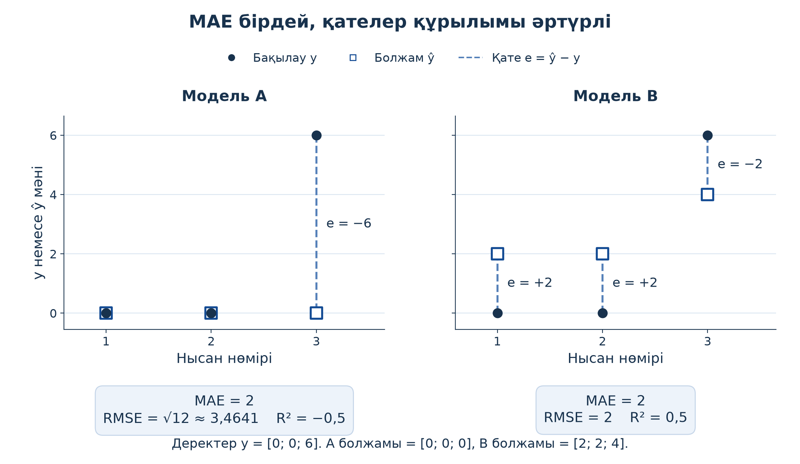
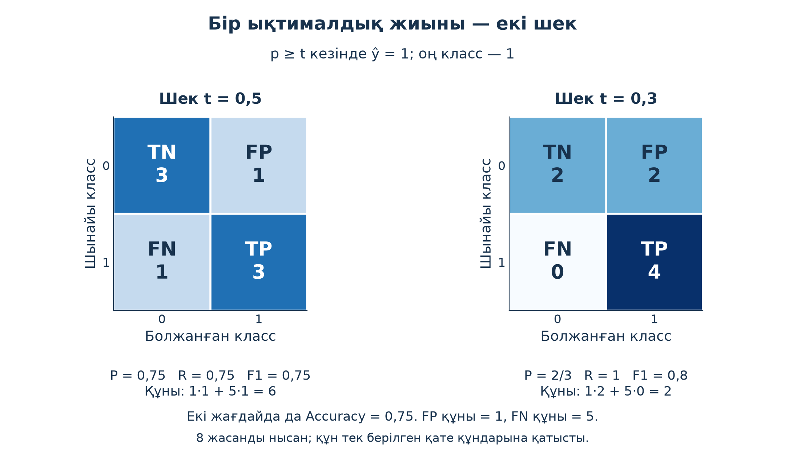
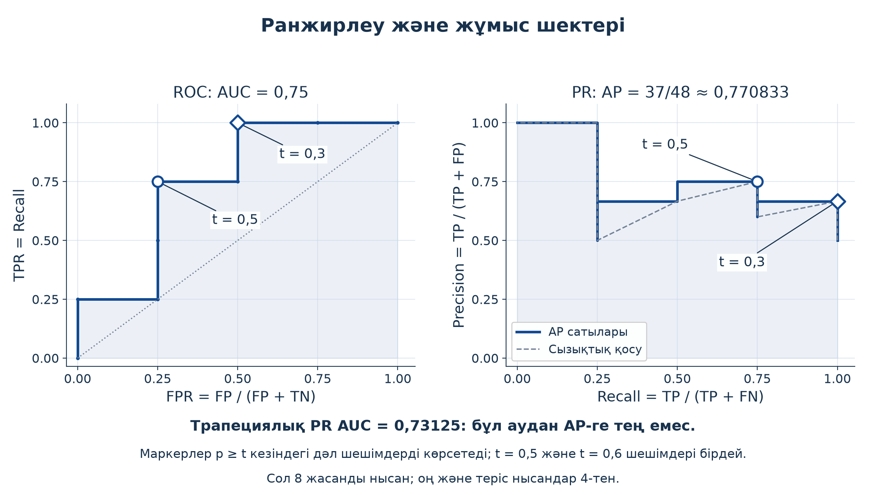
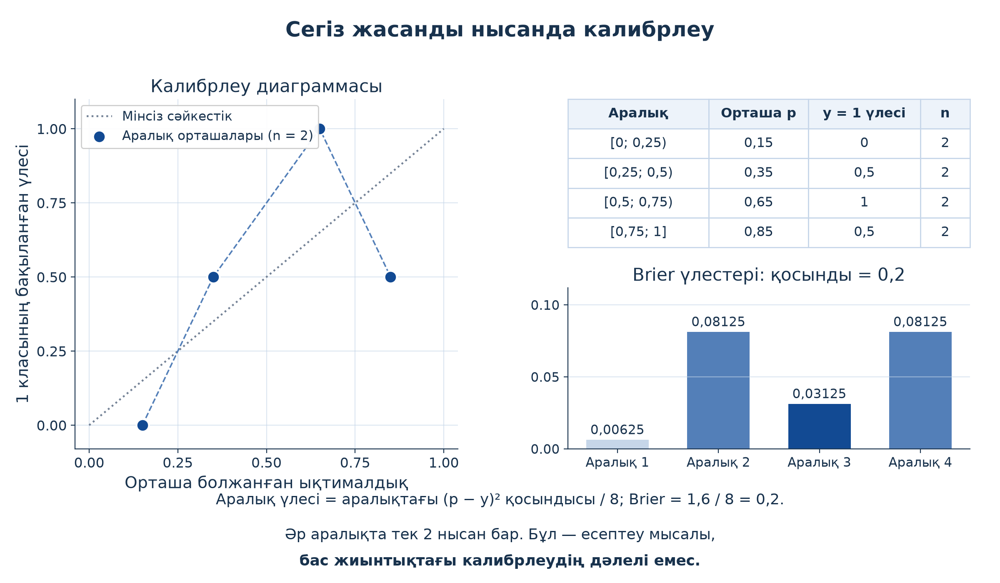
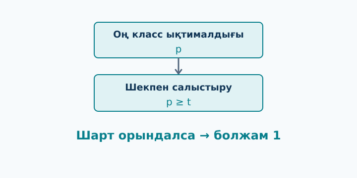
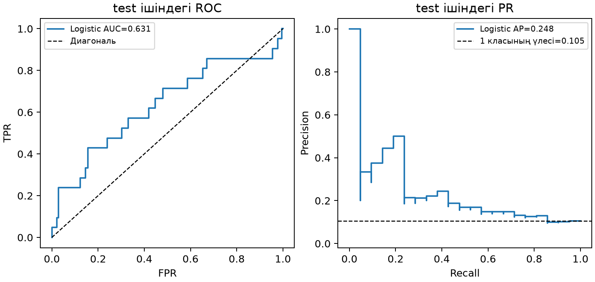
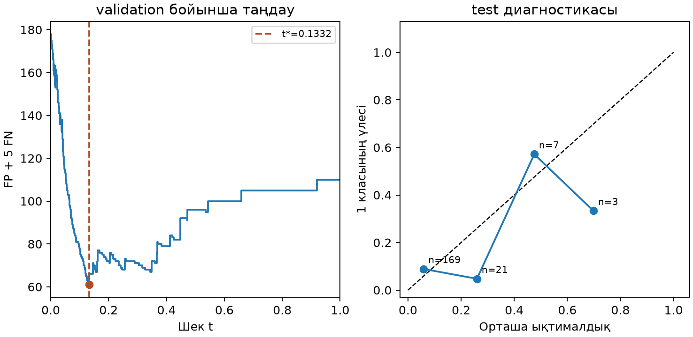

5-тарау. Машиналық оқыту модельдерінің сапасын бағалау және валидациялау.
5.1 Тақырып бағдаршысы
Сапаны сандық бағалау нақты ненің тексерілгені және қандай деректердің шешімге ықпал етуіне рұқсат берілгені түсінікті болғанда пайдалы болады. Дұрыс жауаптардың жоғары үлесі сирек оқиғалардың барлығына жуығын өткізіп алумен қатар жүруі мүмкін. Белгілі жолдардағы төмен қате жаңа аспаптарға тасымалдануды дәлелдемейді. Ықтималдықтардың әдемі графигі шектің test қолданылмай таңдалғанын растамайды. Метрика мен тексеру рәсімі нәтиженің мағынасын бірге анықтайды.
Тараудың мақсаты — есепке сәйкес көрсеткіштер таңдауды, оларды қолмен тексеруді және тәуелсіз бағалау хаттамасын құруды үйрену. Оқып шыққаннан кейін студент регрессиялық қателер мен жіктеу матрицасын есептей алады, оң болжамның дәлдігін (Precision) оң класты анықтау толықтығынан (Recall) ажыратады, бағалар бойынша ROC және PR құрады, қисық астындағы ауданның (AUC) орташа оң болжам дәлдігінен (Average Precision) айырмасын түсіндіреді, ықтималдық шығысын тексереді және шекті баптауды қорытынды тесттен бөледі. Силлабустың 3.1 индикаторы бұл жұмысты модельдерді бағалаумен, валидациялаумен (validation), шамадан тыс үйренуді анықтаумен және теңгерімсіз деректерді талдаумен байланыстырады.
Пререквизиттер: регрессия мен жіктеу есебінің қойылымы, fit/predict, ықтималдық шығысы және өңдеу конвейері (Pipeline). 3–4-тараулардан квадраттық шығын, log-loss, гиперпараметр және класс бағасы мен түпкілікті белгінің айырмасы қолданылады. Қолмен орындайтын жаттығулар үшін қосындылар, үлестер мен логарифм жеткілікті; сенімділік аралығын тексерілмеген формуладан шығару талап етілмейді. Төмендегі барлық шағын мысал жасанды түрде берілген және анықтамаларды арифметикалық тексеруге арналған.
Негізгі ұғымдар: шығын (loss), метрика (metric), қателер матрицасы (confusion matrix), Precision, Recall, F1, ROC, PR, AUC, Average Precision, калибрлеу (calibration), шек (threshold), валидация, айқас тексеру (cross-validation) және out-of-fold. Алдымен болжамдардың бір бекітілген жиынының көрсеткіштері анықталады. Одан кейін шектің өзгеруі мен ықтималдықтарды бағалау қарастырылады. Содан соң рәсімді адал оқытуға және таңдауға мүмкіндік беретін бөліністер енгізіледі. Тараудан кейінгі қосымша жоба бұл әрекеттерді біріктіреді; ол силлабустың ресми бақылау нысандарын алмастырмайды.
Бағалаудың үш нысанын ажырату қажет: оқытылып қойған модель, оны таңдау рәсімі және қолжетімді белгілері мен әрекет ережелері бар жұмыс істейтін жүйе. Бір модельдің ықтималдықтары жақсы болғанымен, шегі сәйкес келмеуі; жақсы алгоритмнің ұсынылуы сәтсіз болуы; метриканың дәл есебінде жарамсыз бөлініс қолданылуы мүмкін. Есепте нысан, жиынтық, қолдану көкжиегі, пайдаланылған деректер мен критерий көрсетілуі тиіс. Сонда ғана сан мазмұнды сұраққа жауап береді.
5.2 Шығындар мен метрикалар: сандық жауаптан қателер матрицасына
5.2.1 Регрессиялық қателер және өлшем бірліктері
Шығын бір нысан немесе топ үшін болжам мен жауап арасындағы алшақтықтың құнын белгілейді. Метрика нәтижелерді осы қойылымда салыстыруға жарамды көрсеткішке біріктіреді. Кейде оқыту критерийі мен қорытынды метрика сәйкес келеді, кейде ерекшеленеді: модель тегіс log-loss функциясын азайта алады, ал қолданба қате әрекеттердің құнымен бағаланады. Мұндай айырмашылық түсіндірілсе, оған жол беріледі. Нәтижелерді көргеннен кейін метриканы өз бетінше алмастыру зерттеу сұрағын өзгертеді.
Регрессия үшін қатені eᵢ=ŷᵢ−yᵢ деп белгілейік. Абсолют ауытқу қате шамасын сызықтық түрде ескереді; квадрат ірі ауытқулардың үлесін күштірек арттырады. Бірдей n нысан жиыны үшін мыналар анықталады:
MAE жауаптың өлшем бірлігімен, ал MSE оның квадратымен өрнектеледі. Егер жауап киловаттпен өлшенсе, сандық MSE мәнін киловатттағы қате деп жазуға болмайды. Бастапқы бірліктерге оралу үшін MSE-ден квадрат түбір алынады. R² коэффициенті қателер квадраттарының қосындысын бақыланған жауаптардың өз орташа мәнінен шашырауымен салыстырады:
Бұл формуладағы орташа ȳ бағаланатын жиын жауаптары бойынша есептеледі. Ол көрсеткіш анықтамасына кіреді және модельді test арқылы оқытуға рұқсат бермейді. Жаңа нысандарға іс жүзінде қолданылатын тұрақты базалық модель (baseline) өзінің тұрақтысын train бойынша бағалайды. Сондықтан оқыту бөлігінің орташа мәнін пайдаланатын DummyRegressor нәтижесі test жиынында міндетті түрде R²=0 бермейді: тест орташа мәні оқыту орташа мәнінен өзгеше болуы мүмкін.
Есептік мысал 5.1. Бірдей MAE және әртүрлі ірі қателер
Шынайы жауаптар [0;0;6] болсын. A моделі [0;0;0], B моделі [2;2;4] берді. A үшін абсолют қателер [0;0;6], B үшін [2;2;2]. Екі MAE де 2-ге тең, бірақ MSE әртүрлі: 36/3=12 және 12/3=4. Сондықтан RMSE мәндері √12≈3,464102 және 2. Бірінші болжам екі нүктеде қатесіз, ал үшіншісінде қатты қателеседі; екіншісі ауытқуларды басқаша бөледі. Таңдау кестеде қай көрсеткіштің кездейсоқ жақсы көрінетініне емес, ірі қатенің құнына байланысты.

Дереккөз: үш жасанды жауап пен екі берілген болжамның авторлық сызбасы.
Шынайы жауаптың орташа мәні 2-ге, одан ауытқулар квадраттарының қосындысы 4+4+16=24-ке тең. A үшін R²=1−36/24=−0,5, B үшін 1−12/24=0,5 аламыз. [2;2;2] тұрақтысы R²=0 берер еді. Теріс мәнге жол беріледі: қателер квадраттарының қосындысы таңдалған нормалаушы салыстырудың бөлімінен артық. R² дұрыс болжанған сандардың үлесі емес және төменнен нөлмен шектелмейді. Оны «дәлдік пайызы» деп атауға болмайды.
Егер барлық шынайы жауап бірдей болса, R² бөлімі нөлге айналады, бастапқы қатынас кәдімгі ақырлы көрсеткішті анықтамайды. r2_score кітапханалық функциясында әдепкіде осындай жағдайларды ақырлы мәндермен алмастыратын force_finite келісімі бар. Есеп тұрақты жауапты анықтап, таңдалған әрекетті түсіндіруі керек; бағдарламалық келісімді модельдің ақпараттылығының дәлелі ретінде ұсынбауы тиіс. Екі нысаннан аз жиын үшін де R² шашырауды әдеттегідей салыстыруды бермейді.
Жауаптың әртүрлі өлшем бірліктері арасында масштабты қайта есептемей MAE мен RMSE-ні мазмұнды салыстыруға болмайды. Тіпті өлшемсіз R² те қарастырылатын жиынтықтың шашырауына байланысты. Табиғи өзгергіштігі аз тұрақты шаманы болжау есебі мәндер ауқымы кең есептен ерекшеленеді. Пайдалы есеп тек жалпы көрсеткішті ғана емес, бірліктерді, іріктеме көлемдерін, baseline мен қателер үлестірімін сақтайды. Бірнеше шығыс үшін координаттар бойынша орташалау тәсілі қосымша бекітіледі.
Ірі қате алдымен нақты бақылау ретінде зерттеледі: жауап дұрыс өлшенген бе, белгілер болжам кезінде қолжетімді ме, қолдану саласы өзгерген жоқ па? Жолды алып тастағаннан кейін RMSE азаяды деген себеппен ғана оны жоюға болмайды. Егер жүйе кейде болжам бермесе, қамтуды бөлек көрсету қажет: қолайлы ішкі жиын бойынша бағалау барлық сұрауды бағалау болып саналмайды. Салыстырылатын рәсімдерге рұқсат етілген бірдей нысандар қолданылуы тиіс.
5.2.2 Қателер матрицасы және оң кластың мағынасы
Жіктеу үшін алдымен қай оқиғаның оң болып саналатыны анықталады. Келесі есептеулерде оң класс 1, теріс класс 0 деп белгіленеді. Белгідегі сан қолданбалы маңыздылықты автоматты түрде анықтамайды: ақауды анықтағанда қай санат ақауды білдіретінін айқын көрсету керек. Көпкластық есепте оң санатты қалғандарына қарсы кезекпен бөліп алуға болады. Жолдар не бағандар орын алмастырғанда түсіндіру байқалмай өзгермеуі үшін белгілер реті нәтижемен бірге сақталады.
Қателер матрицасында жолдар шынайы, бағандар болжанған кластарға сәйкес, екеуінің де реті [0;1]. Жоғарғы сол жақ TN ұяшығы — дұрыс қабылданбаған теріс нысан; жоғарғы оң жақ FP — оң болжам алған теріс нысан, яғни жалған дабыл. Төменгі сол жақ FN — теріс болжам алған оң нысан, яғни өткізіп алу. Төменгі оң жақ TP — дұрыс табылған оң оқиға. true және false сөздері шешімнің дұрыстығын, positive және negative берілген шешімді сипаттайды. Сондықтан жалған оң жағдайды «модель өткізіп алған оң нысан» деп анықтауға болмайды.
Дұрыс шешімдердің жалпы үлесі, оң іске қосылулардың дәлдігі және анықтау толықтығы әртүрлі бөлімдермен анықталады:
Accuracy барлық қарастырылған нысан ішіндегі дұрыс белгілер үлесі туралы сұраққа жауап береді. Precision оң болжамдардың қандай үлесі дұрыс болғанын көрсетеді. Recall шын мәнінде оң нысандардың қандай үлесін анықтау мүмкін болғанын көрсетеді. Ортақ «дәлдік» сөзіне бола бір көрсеткішті екіншісінің орнына қоюға болмайды. Есепте халықаралық атауды қазақша түсіндірмемен қатар сақтау және оң класты әрдайым көрсету пайдалы.
95 теріс және бес оң нысан болғанда «әрдайым 0» ережесі Accuracy=0,95 және Recall=0 береді. Оң болжамдар жоқ, сондықтан Precision математикалық қатынасының бөлімі нөл. Бағдарламалық функция бұл жағдайды берілген келісім бойынша өңдеуі тиіс; 0 мәнін, ескертуді немесе NaN мәнін түсіндіру керек. Таңдалған zero_division әрекеті жоқ іске қосылуларды жасамайды. Сирек оқиғалар маңызды болса, дұрыс белгілердің жоғары жалпы үлесі мұнда жеткіліксіз.
F өлшемі Precision мен Recall-ды гармониялық қатынаспен біріктіреді. β параметрі толықтыққа салыстырмалы екпінді белгілейді; β=1 үшін симметриялы F1 аламыз:
Егер бастапқы екі үлес те анықталған және оң болса, гармониялық орташа олардың кішісіне ерекше сезімтал. Алайда F1 TN-ді ескермейді және қателердің орташа құнына тең емес. β мәнін арттыру толықтыққа мән беруді білдіруі мүмкін, бірақ β² санын өткізіп алу мен жалған дабылдың ақшалай құндарының қатынасы деп автоматты жариялауға болмайды. Құн үшін әрекеттер салдары мен тиісті критерий тікелей берілуі керек.
Есептік мысал 5.2. Бір ықтималдық жиыны және екі шешім
Сегіз жасанды шынайы белгіні y=[0;1;0;1;1;0;1;0] және оң класс бағаларын p=[0,1;0,9;0,4;0,7;0,3;0,2;0,6;0,8] деп берейік. Нысандарды нөмірлеу бірден басталады. Мұндағы p бағасы осы сегіз жолда оқыту арқылы алынған жоқ: мәндер арифметиканы тексеру үшін толық берілген. p≥t болғанда ŷ=1 деген өз ережемізді қолданамыз. Нақты жіктеуіш интерфейсінде дәл теңдік кезіндегі келісім өзгеше болуы мүмкін, сондықтан ол айқын көрсетілген.
t=0,5 болғанда 2,4,7,8 нысандары оң болжам алады. Олардың алғашқы үшеуі шынында оң, сегізіншісі теріс. Бағасы 0,3 болатын оң 5 нысаны өткізіп алынған. Сондықтан TP=3,FP=1,FN=1,TN=3; Accuracy, Precision, Recall және F1 мәндері 0,75-ке тең. t=0,3 болғанда 2,3,4,5,7,8 нысандары оң деп шешіледі: TP=4,FP=2,FN=0,TN=2. Accuracy 0,75 болып қалады, Precision 2/3, Recall 1, F1 0,8 болады. 5.2-суретте бұл өзгерістер екі матрицамен көрсетілген.

Дереккөз: сегіз берілген белгі мен ықтималдық бойынша авторлық есеп; оң класс 1.
Кесте 5.1. Бір жасанды ықтималдық векторы үшін екі шек
| Шек t | TP / FP / FN / TN | Precision | Recall | 1 класының F1 мәні | FP+5FN құны |
|---|---|---|---|---|---|
| 0,5 | 3 / 1 / 1 / 3 | 0,75 | 0,75 | 0,75 | 6 |
| 0,3 | 4 / 2 / 0 / 2 | 0,666667 | 1 | 0,8 | 2 |
Кесте қорытынды test бойынша шек таңдауға рұқсат бермейді: мұнда екі рәсім де алдын ала берілген, ал деректер жасанды. Ол бірдей Accuracy неліктен әртүрлі қате құрамына және әртүрлі салдарға жол беретінін көрсетеді. Егер өткізіп алу бес шартты бірлік, жалған дабыл бір бірлік тұрса, құн алтыдан екіге төмендейді. Құндар қатынасы басқаша болғанда не басқа жиында таңдау өзгеруі мүмкін. Құн туралы байқау шектің қайда және қалай таңдалғанын тексеруді алмастырмайды.
5.2.3 Кластар бойынша орташалау
Көпкластық қойылымда Precision, Recall және F1 әр санат үшін қалғандарына қарсы есептелуі мүмкін. Macro орташалау алдымен әр кластың көрсеткішін алып, содан соң оларды тең салмақпен орташалайды. Weighted орташалау класс тірегін, яғни осы санаттың шынайы нысандарының санын қолданады. Micro тәсілі үлесті есептеместен бұрын тиісті TP,FP,FN сандарын біріктіреді. average көрсетілмеген метрика атауы оның анықтамасының елеулі бөлігін жасырады.
Біздің бинарлық мысалдың 0,3 шегінде оң кластың F1 мәні 0,8-ге тең. Егер уақытша 0 класын оң деп санасақ, TP₀=2,FP₀=0,FN₀=2 және F1₀=2/3 аламыз. Сондықтан 1 класының F1 мәні жоғары болса да, macro-F1 мәні (0,8+2/3)/2≈0,733333 болады. Мұндай айырмашылық кітапхана қатесі емес. Метрикалар әртүрлі сұрақтарға жауап береді, әр санға өз тақырыбы қажет.
Macro-F1 бөлек орташаланған Precision мен Recall-ға F1 формуласын қолданудан алынбайды: сызықтық емес қатынас пен орташалау жалпы жағдайда орын ауыстырмайды. Әр нысанға бір ғана өзара үйлеспейтін белгі және кластардың толық жиыны бар есепте micro-F1 Accuracy-мен сәйкес келеді, себебі әр қате белгі бір жаһандық FP және бір FN тудырады. Көпбелгілі есептерде немесе бағаланатын санаттар жиыны толық болмағанда мұндай теңдік автоматты түрде шықпайды. Кластар тірегі қатты ерекшеленсе, агрегатпен бірге әр кластың сандарын көрсету пайдалы.
Белгілер реті ықтималдықтар үшін ерекше маңызды. predict_proba бағаны қызықтыратын оқиға әрдайым екінші орында деген жорамалмен емес, classes_ арқылы таңдалады. Оң кластың мағынасын өзгертсе, белгілерді де, таңдалған ықтималдық бағанын да келісімді түрде өзгерту керек. Тек біреуінің орнын ауыстыру сырттай нөлден бірге дейінгі шынайы көрінетін сан ауқымын сақтай отырып, жақсы ранжирлеуді нашарға айналдыруы мүмкін.
5.3 Ранжирлеу, ROC және Precision–Recall
5.3.1 Шектің жылжуы нені өзгертеді
Бір оқытылған жіктеуіш әртүрлі шешім құруға пайдаланылатын бағалар бере алады. t шегі біртіндеп төмендегенде жаңа нысандар оң деп болжанады. Бекітілген бағалар үшін таңдалған жолдар жиыны кеңейеді; TP мен FP кемімейді. Егер шынайы оң нысандар бар болса, Recall да кемімейді. Ал Precision өсуі де, төмендеуі де мүмкін: келесі қосылған жол дұрыс немесе қате болады. Сондықтан PR қисығын міндетті түрде монотонды кемитін функция деп сипаттауға болмайды.
ROC үшін табылған оң нысандар үлесі TPR және қателесіп оң деп таңдалған теріс нысандар үлесі FPR қолданылады:
Көлденең осьте FPR, тік осьте TPR белгіленеді. Бағалары үлкен жолдар ертерек қосылады. Шек барлық бағадан жоғары болса, оң болжамдар жоқ, нүкте (0;0) орнында; барлық жол қосылғанда, жиында екі класс та бар болса, ол (1;1) нүктесіне келеді. Precision-нан өзгеше, FPR бөлімі барлық оң болжам емес, шынайы теріс кластың барлық нысаны, яғни FP+TN. Ерекшелік (Specificity) 1−FPR-ге тең және дұрыс қабылданбаған теріс нысандар үлесін көрсетеді.
Қолмен есептелетін мысалда t=0,5 үшін TPR=3/4 және FPR=1/4. t=0,3 үшін TPR=1 және FPR=1/2. Қосымша критерийсіз ROC бұл әрекеттердің арасынан таңдамайды: бір нүктеге көбірек анықталған оқиға және көбірек жалған дабыл сәйкес келеді. Өткізіп алудың берілген рұқсатты жиілігіне не тексерудің шектеулі қуатына қажетті шек есеп қойылымымен анықталады. График ағымдағы бағалар векторы үшін қолжетімді қатынастарды көрсетеді.
Қисықтарды құруға ықтималдықтарды не үлкен мәндері оң класқа көбірек сенімділікті білдіретіндей бағытталған басқа үздіксіз көрсеткішті қолдануға болады. Дайын 0/1 белгілері бірнеше деңгей ғана беріп, ранжирлеу туралы егжей-тегжейлі ақпаратты жоғалтады. decision_function мәні ықтималдық болмаса да, ROC үшін жарауы мүмкін. Бұл ретте мұндай көрсеткіштің сандық шегін қосымша негізсіз ықтималдық деп түсіндіруге болмайды.
5.3.2 ROC ауданы жұптарды салыстыру ретінде
Эмпирикалық ROC AUC қарапайым жұптық түсіндіруге ие. Оң және теріс жолды алып, қайсысының бағасы жоғары екенін тексереміз. Оң жолдың дұрыс реті үшін бір, теңдік үшін жарты беріледі. Барлық осындай жұп бойынша орташалау мынаны береді:
n₊ және n₋ таңбалары оң және теріс нысандар санын, s бағытталған бағаны білдіреді. Формула екі кластың да болуын талап етеді. Барлық кластар арасындағы жұптың қатаң реті дұрыс болса, аудан бірге тең; ретте жүйелі басымдық болмаса, жартыға жуық. Толығымен бірдей бағалар үшін теңдіктердің жарты үлесі ережесіне байланысты ол 0,5-ке тең. AUC 0,5-тен төмен болуы мүмкін; алдымен белгілердің мағынасы мен бағалау бағытын тексеру керек, тест нәтижесін әдемі көрсету үшін ғана таңбаны өзгертпеген жөн.
Біздің мысалда оң бағалар [0,9;0,7;0,3;0,6], теріс бағалар [0,1;0,4;0,2;0,8]. Бірінші оң баға төрт теріс бағадан да, екіншісі үшеуінен, үшіншісі екеуінен, төртіншісі үшеуінен артық. Теңдіктер жоқ. (4+3+2+3)/16=0,75 шығады. Бұл бір шектегі дұрыс белгілер үлесі емес, барлық он алты жұпты тексеру. 5.3-суретте осы мысалдың ROC қисығы PR-мен салыстырылған.

Дереккөз: сегіз берілген бағаның авторлық есептері; AP және трапециялық PR ауданы ерекшеленеді.
Бағалардың кез келген қатаң өспелі түрлендіруі олардың реті мен теңдіктерін сақтайды, сондықтан ROC AUC-ті де сақтайды. Сонымен қатар ол ықтималдық мәндері мен бекітілген сандық шектегі шешімдерді өзгерте алады. Жоғары AUC калибрлеуді дәлелдемейді және қателердің кез келген құнында жақсы сапаны білдірмейді. Жиынтық аудан жүйе жұмыс істеуі тиіс FPR-дің шағын аймағындағы модельдер айырмасын да жасыруы мүмкін. Осындай аймақ қызықтырса, оны алдын ала белгілеп, айқын бағалайды.
5.3.3 PR және Average Precision
PR көлденеңінен Recall-ды, тігінен Precision-ды салыстырады. Ол шынайы оқиғалардың берілген қамтылуында таңдалған оң әрекеттердің қандай үлесі дұрыс болатынын тікелей көрсетеді. Оң класс сирек кезде тіпті шағын FPR көп жалған дабыл тудыруы мүмкін, себебі теріс нысандар әлдеқайда көп. Сондықтан ROC-пен қатар PR мен қателердің нақты санын қарастыру пайдалы. Бір қисықты барлық қойылым үшін әмбебап жеткілікті деп жариялауға болмайды.
Жолдар кездейсоқ таңдалғанда іріктелгендер ішіндегі оң үлес оқиғаның таралу жиілігімен байланысты. Біздің теңгерілген мысалда бұл бастапқы үлес 1/2-ге тең. Егер оң үлесті күрт өзгертсе, бағалардың кластық үлестірімдері ұқсас мінез көрсетсе де, Precision және PR мәндері өзгереді. Бағалардың шартты үлестірімдері сақталғанда ROC басқаша әрекет етеді. Демек әртүрлі жиындардың PR қисықтарын салыстыруда олардың класс жиіліктерін хабарлау қажет.
Average Precision немесе AP дәлдіктерді Recall өсімдерінің салмақтарымен біріктіреді. Қатаң шектен жұмсағырақ шекке және өсетін толықтыққа өту үшін сатылы келісім қолданылады:
Бағалар тең болғанда жолдар бір топпен қосылады; белгілі жауаптар арқылы бірдей мәндерді өз бетінше реттеп, қолайлырақ аудан алуға болмайды. scikit-learn ішіндегі average_precision_score сызықтық интерполяция енгізбейтін осы нұсқаны қолданады. Precision–Recall нүктелерін трапециялық интегралдау — басқа амал. Екі нәтиже де бөлек аталу керек; есептеу тәсілінсіз «PR AUC» жазуы жеткіліксіз.
Сегіз бағаны кему ретімен сұрыптайық. [1;0;1;1;0;1;0;0] белгілер тізбегін аламыз. Оң нысандар 1,3,4,6 орындарында пайда болады. Осы сәттердегі дәлдіктер 1;2/3;3/4;4/6, әр Recall өсімі 1/4-ке тең. Сондықтан AP=(1+2/3+3/4+4/6)/4=37/48≈0,770833. Сол нүктелер үшін трапециялық есеп 0,73125 береді. Мұндағы алшақтық басқа деректерден не модельдің шамадан тыс үйренуінен емес, аудан анықтамасынан туындайды.
ROC AUC=0,75 және AP≈0,770833 сандары бір математикалық шаманың екі бағасы емес. Олардың осьтері, біріктіру тәсілдері және кластар құрамына тәуелділігі әртүрлі. Оларды «AP AUC-тен жоғары, демек ол модельді жақсырақ өлшейді» деп тікелей салыстыруға болмайды. Көпкластық жағдайда санаттарды бөлу сызбасы мен орташалау қосымша анықталады. macro AUC, weighted AP және бір кластың F1 мәнін ортақ «сапа пайызына» араластыру сандарды бастапқы мағынасынан айырады.
5.4 Ықтималдықтар, калибрлеу және әрекетті таңдау
5.4.1 Ықтималдық болжамының қатесі
Нысандардың дұрыс реті сандық ықтималдықтарды күтілетін салдарларды есептеуге жарамды ете салмайды. 0,51 және 0,99 бағалары бірдей белгіге әкелуі мүмкін, бірақ әртүрлі сенімділікті білдіреді. Болжамы 0,8 шамасындағы топта оқиға шамамен 80% жағдайда болса, бұл қарастырылатын жиынтық үшін калибрлеу идеясымен үйлеседі. Мұндай байланысты ықтималдығы 0,8 болатын бір нәтижемен емес, көптеген бақылаумен тексереді.
Ықтималдық шығысын бағалау тәсілінің бірі — оң класс ықтималдығының орташа квадраттық қатесі, Brier көрсеткіші (Brier score):
Мұнда 1 оқиғасы үшін бір pᵢ ықтималдығы бар бинарлық келісім қолданылады. Осы шығын мағынасында ықтималдық болжамы жақсырақ болса, Brier кішірек; нөлдік мән барлық ықтималдықтың жауаптармен дәл сәйкес болуын талап етеді. Біздің сегіз жасанды жол үшін квадраттар қосындысы 1,6, орташа мәні 0,2. Тұрақты 0,5 ықтималдығы 0,25 береді. Көпкластық анықтамаларда басқа қосындылар мен нормалаулар қолданылуы мүмкін, оларды бөлек көрсету керек.
3-тараудағы логарифмдік шығын сенімді қате болжамға күштірек жауап береді:
Сегіз берілген ықтималдық үшін LL≈0,578200; тұрақты 0,5 үшін ln2≈0,693147. Логарифм натурал. Егер шынайы класс нөлге ұмтылатын ықтималдық алса, сәйкес шығын шексіз өседі. Дәл шекаралық мәндерде математикалық өрнек пен ықтималдықтарды бағдарламалық шектеу айқын келісімді талап етеді. Есеп үшін p-ны нөлге не бірге дөңгелектеп, кейін есептеуде бастапқы сандардың орнына дөңгелектелгендерін қолдануға болмайды.
Екі шығын да ықтималдық сапасын бағалайды, бірақ кіші Brier өздігінен жақсырақ калибрлеуді дәлелдемейді. Мәнге оқиға ықтималдығы әртүрлі нысандарды ажырату қабілеті де ықпал етеді. Сондықтан ықтималдық топтары бойынша талдау да қолданылады. Болжамдар аралықтарға бөлініп, әрқайсысы үшін орташа баға, бақыланған оң үлес және топ көлемі көрсетіледі. Графиктегі азсанды нүктенің тұрақтылығы мыңдаған нысан тобыныкіндей болмайды.
Көрнекілік үшін төрт аралық алайық: [0;0,25), [0,25;0,5), [0,5;0,75), [0,75;1]. Әрқайсысына біздің екі нысаннан түсті. Орташа ықтималдықтар 0,15;0,35;0,65;0,85, бақыланған оқиға үлестері 0;0,5;1;0,5. 5.4-суретте олар сәйкестік диагоналінің жанында көрсетілген. Сегіз жасанды жол құрылымды тексеруге мүмкіндік береді, бірақ бас жиынтықтағы калибрлеуді немесе оның жоқтығын растамайды. Нақты бағалау үшін жеткілікті деректер мен лайықты бөлініс қажет.

Дереккөз: сегіз жасанды нысан; әр аралықта екі бақылаудан, бас жиынтық калибрлеуін тексеру емес.
Калибрлеу әдісі де оқытылады. Егер калибраторды кейін сапасын дәлелдейтін сол болжамдар мен жауаптарға бейімдесе, нәтиже оптимистік болады. Бөлек деректер немесе ішкі out-of-fold болжамдар қажет; дайындықтың барлық оқытылатын кезеңі сол шекараларды сақтауы тиіс. Калибрлеуден кейін сапа таңдауға қатыспаған деректерде қайта тексеріледі. Параметрдегі sigmoid не isotonic атауының өзі дұрыс хаттаманы автоматты түрде қамтамасыз етпейді.
5.4.2 Шек және қате құны
Дұрыс әрекеттер құны нөл, жалған дабыл cFP, өткізіп алу cFN тұрсын. Бекітілген тексеру жиыны үшін жалпы шығын екі қате санымен анықталады. Егер p қолдану жағдайындағы оқиғаның жарамды шартты ықтималдығы болса, оң әрекеттің күтілетін cFP(1−p) құнын теріс әрекеттің cFN·p құнымен салыстыруға болады. Құндар теріс емес және қосындысы оң болса, мынаны аламыз:
cFP=1,cFN=5 кезінде теориялық шек 1/6-ға тең. Қорытынды берілген шығын матрицасы мен ықтималдықтардың жарамдылығына байланысты. Ол кез келген өңделмеген score-ды 1/6-мен салыстыру керек немесе ақырлы validation жиынында дәл осындай шек әрдайым оңтайлы дегенді білдірмейді. Әрекеттер саны шектелгенде, дұрыс жауаптар құны басқа болғанда, оқиғаның таралу жиілігі өзгергенде не калибрлеу нашар болғанда есепті қайта тұжырымдау қажет.
Зертханалық жұмыста шек ақырлы validation жиыны мен алдын ала жарияланған шығын ережесі бойынша таңдалады. Бұл — эмпирикалық рәсім, оның нәтижесі кейін бекітіледі. Таңдаудан кейін модельді басқа деректерде білдірмей қайта оқытып, ықтималдықтардың басқа масштабын алып, ескі сандық шекті жаңа болжауыш үшін тексерілген деп санауға болмайды. Қорытынды қайта оқыту керек болса, шекті тасымалдау мен қайта тексеру тәсілі сәтсіз test-тен кейінгі түзету емес, хаттаманың бөлігі болуы тиіс.
Қорытынды test таңдалып қойған рәсімді сипаттау үшін қажет. Ол күтілген жақсарудың болмағанын немесе шағын болғанын көрсетуі мүмкін. Мұндай нәтиже сақталып, түсіндіріледі; сол жауаптар бойынша қайта баптау test-ті development жиынының тағы бір бөлігіне айналдырады. Нақты бөліністер, айқас тексеру және OOF бұл үдерісті ұйымдастыруға мүмкіндік береді; олар келесі бөлімдерде қарастырылады.
5.1–5.4-бөлімдердің бастапқы дереккөздері
- Scikit-learn. Metrics and scoring: бағдарламалық метрикалардың анықтамалары мен келісімдері.
- Scikit-learn. Probability calibration: ықтималдық сапасы және калибрлеуді тексеру.
- Scikit-learn. Tuning the decision threshold: ықтималдық болжамы мен әрекетті таңдауды бөлу.
scikit-learn 1.9.1 ресми құжаттамасы 04.11.2026 күні тексерілген. Тақырыптық негіз — автордың 5-дәрісі; келтірілген барлық шағын кесте мен есептеу осы тарау үшін әзірленіп, бөлек есептелген.
5.5 Деректерді бөлу және айқас тексеру
Метрика өзі есептелген деректер сипаттамасымен бірге мазмұнды мағынаға ие болады. Қатенің бірдей мәні таныс жолдарда оқытуды, жаңа адам үшін болжамды немесе келесі айдағы жұмысты сипаттауы мүмкін. Бұл жағдайлар тексеруге әртүрлі талап қояды. Сондықтан блоктар санын таңдамастан бұрын жүйе қолданысқа енгізілгеннен кейін оған қандай нысандар мен қандай ақпарат қолжетімді болатынын тұжырымдау қажет. Бөлу сызбасы болашақ қолданудың елеулі шектеулерін қайталауы тиіс.
Қарапайым кейінге қалдырылған бөліністе (holdout) train оқыту бөлігі модель параметрлері мен оқытылатын түрлендірулерді баптауға арналған. validation тексеру бөлігі модель тобын, гиперпараметрлерді, белгілер құрамын және шешім қабылдау ережесін таңдауға көмектеседі. Бөлек test тест бөлігі бекітіліп қойған шешімді бағалауға арналған. Бұл рөлдерді айнымалының атауы емес, ақпараттың қолданылуы анықтайды. Зерттеуші test-ке қайта-қайта қарап, модельді сол нәтижелер бойынша өзгертсе, бұл бөлік іс жүзінде әзірлеуге қатысады және тәуелсіз қорытынды тексеруді қамтамасыз етпейді.
Оқыту мен таңдауға қолжетімді деректер бірлестігін әзірлеу іріктемесі (development) немесе dev деп атаған ыңғайлы. Оның ішінде бір train/validation бөлінісін сақтауға немесе айқас тексеру жүргізуге болады. Сыртқы test бүкіл әзірлеу рәсімінен тыс қалады. Таңдау аяқталғаннан кейін бекітілген баптаулары бар модель әдетте бүкіл dev іріктемесінде қайта оқытылады. Мұндай қайта оқыту қосымша рұқсат етілген деректерді қолданады және тест жауаптарын қосуды талап етпейді. Қорытынды баға алынған модельге және оны тексерудің келісілген жағдайларына қатысты.
Бөліктер көлемдерінің әмбебап пропорциясы жоқ. Үлкен train оқытуға көмектеседі, жеткілікті үлкен validation салыстыруды тұрақтырақ етеді. Қорытынды нәтижені түсіндіру мүмкін болуы үшін test қызықтыратын түрлердің жеткілікті нысанын қамтуы керек. Егер жүйе жаңа жабдыққа тасымалдануы тиіс болса, бір аспаптың ондаған мың жолы аспаптар алуандығын алмастырмайды. Сирек оқиғаларда іріктеменің жалпы көлемі де сезімталдық бағасының сенімділігі туралы аз мәлімет береді: оқиғалардың өз саны маңызды. Бөлік көлемдері қолданумен және қолжетімді деректермен негізделеді.
Айқас тексеру блоктары. Әдеттегі K-fold айқас тексеруде dev қиылыспайтын K тексеру блогына бөлінеді. Әр блок үшін модель қалған K−1 блокта оқытылып, шығарылған блокта бағаланады. Әр нысан дәл бір рет тексеру нысаны болады. Барлық блокта ретімен қосымша оқытылатын бір модель емес, K оқытылған модель және K тексеру нәтижесі алынады. Салыстырылатын алгоритмдер бірдей нысандарда тексерілуі үшін бөліністерді сақтау қажет. K саны оқыту бөлігінің көлемі, есептеу құны және бағалау ерекшеліктері арасындағы ымыраны белгілейді.
Әдеттегі KFold класс белгілерін ескермейді. Жіктеу үшін StratifiedKFold әр блоктағы олардың үлестерін жуықтап сақтауға ұмтылады. Бұл сирек класы жоқ тексеру бөлігін алу қаупін азайтып, бірқатар метриканы есептеуге мүмкіндік береді. Алайда стратификация (stratification) қосымша оң мысалдар жасамайды және ортақ пайдаланушыларды, аспаптарды немесе уақыттық тәуелділікті жоймайды. Егер таңдалған блоктар саны үшін сирек нысандар тым аз болса, хаттаманы қайта қарау керек; әр класты сенімді тексеруге уәде беру мүмкін емес. Бұл құралдардың міндеті KFold және StratifiedKFold құжаттамасында ажыратылған.
Блоктар құрамынан бөлек, оқыту көлемі маңызды. Бес блок болғанда әр аралық модель dev-тің шамамен бестен төртін қолданады, ал түпкілікті модель оны толығымен қолдана алады. Сондықтан CV бағасы қолжетімді оқыту деректерінің нақты көлеміндегі берілген рәсімді сипаттайды және модельдің түпкілікті данасының қатесімен сандық түрде сәйкес келуге міндетті емес. K-ның өсуі бұл көлемді өзгертіп, оқыту санын арттырады. Ол модельдің өзін жақсартуға немесе сенімдірек салыстыруға кепілдік бермейді. K-ны байқалған ең жоғары сапа бойынша таңдау тексеру нәтижелеріне тәуелді тағы бір шешім қосуды білдіреді.
Тәуелсіз жолдардың реті қолдану есебіне қатысты кездейсоқ болса, араластыру негізді. Жолдар алдымен класс бойынша сұрыпталған болса, араластырмай бөлу сәтсіз болуы мүмкін. Ал рет уақытты немесе бір нысанның тізбекті өлшемдерін көрсетсе, кездейсоқ араластыру тексерудің маңызды шектеуін жоюы мүмкін. Бекітілген seed таңдалған кездейсоқ рәсімді қайталанымды етеді, бірақ оның дұрыстығын өздігінен негіздемейді. Блоктар санын, араластыру тәсілін және нысандар индекстерін жазу нақты қандай салыстыру орындалғанын түсінуге мүмкіндік береді.
Түрлендірулерді блок ішінде оқыту. CV-дің әр қадамында оқыту деректерінен алынатын барлық шама қайта бағаланады: жетіспейтін мәндерді толтыру орташалары, масштабтау параметрлері, санаттар сөздігі, таңдалған белгілер. Pipeline ішінде бұл амалдар модельмен біріктіріліп, айқас тексеру рәсіміне бір оқытылатын нысан ретінде беріледі. Алдымен конвейер осы қадамның оқыту бөлігінде fit орындайды; кейін сақталған түрлендірулерді тексеру бөлігіне қолданып, болжамдар құрады. Бүкіл dev бойынша алдын ала оқытылған scaler, оған мақсатты мәндер берілмесе де, шығарылған блок ақпаратын қолданып қойған.
Бұл ереже мақсатты айнымалыны қолданатын амалдарға да таралады. Мысалы, жауаппен байланысына қарай белгі таңдау әр оқыту блогының ішінде орындалуы тиіс. Сирек кластың өкілдігін жасанды арттыруды да бастапқы нысандарды бөлместен бұрын жүргізуге болмайды: өзара байланысты синтетикалық және бастапқы бақылаулар шекараның екі жағына түсуі мүмкін. Конвейер оқытуды дұрыс ұйымдастыруға көмектеседі, бірақ әр бөліктегі бірдей нысандарды не болашақтан алынған белгіні автоматты анықтамайды. Бөлу ережелері мен белгілер мағынасы зерттеушінің жауапкершілігінде қалады. Мұндай бұзушылық мысалдары scikit-learn деректердің ағып кетуін болдырмау ұсынымдарында талданған.
Оқыту блогынан тыс болжамдар. Модельдің осы нысанда оқытылмай алған болжамы out-of-fold немесе OOF болжамы деп аталады. Әдеттегі K-fold бөлінісінде dev-тің барлық n нысаны үшін осындай болжамдардың бір векторын жинауға болады. Тексеру блогын Vₖ, i нысанының блогын k(i), ал Vₖ-сіз оқытылған бүкіл конвейерді f⁽⁻ᵏ⁾ деп белгілейік. Әр нысан үшін бөлек есептелетін шығынның орташа OOF шығыны мынадай:
Мұнда тексеру блоктары барлық қарастырылатын нысанның бөлінісін құрайды: әр индекс дәл бір Vₖ құрамына кіреді. Блок көлемдері тең болмаса, олардың орташа шығындары саны бойынша салмақталады; K мәннің жай орташа мәні басқа салмақтау ережесіне сәйкес келеді. Орташа абсолют қате немесе log loss үшін мұндай қосу жеке нысандар шығындары арқылы тікелей анықталады. F1 және ROC-AUC үшін біріктірілген OOF болжамдар метрикасы мен блоктар метрикаларының орташа мәні арасында жалпы теңдік жоқ. AUC жағдайында біріктіру қосымша әртүрлі оқытылған модельдердің бағаларын салыстырады. Бұл шектеу cross_val_predict құжаттамасында тікелей көрсетілген.
«Әр нысанға дәл бір тексеру блогы» шарты маңызды. Қайталама CV кезінде бір нысан әртүрлі оқытудан бірнеше болжам алады; тізбекті уақыттық тексеруде бастапқы бөлік әдетте тек оқытуға қызмет етеді. (5.11) формуласын бастапқы массивтің барлық жолы бір тексеру болжамын алғандай механикалық қолдануға болмайды. Бағаланған нысандар жиынын, болжамдар санын және біріктіру тәсілін айқын көрсету керек. Бірнеше модельдің ықтималдықтарын орташалап, содан кейін шығынды есептеу — алдымен жеке шығындарды есептеп, оларды орташалаудан өзгеше болжау ережесін бағалау.
OOF болжамдары қателерді талдау мен dev бойынша шек таңдау үшін пайдалы. Бұл ретте нысанның сәйкес модельді оқытуға қатыспауы бүкіл рәсімнің тәуелсіздігіне кепілдік бермейді. Егер гиперпараметрлер алдын ала бүкіл dev ішіндегі CV нәтижелерімен таңдалса, бұл нысанның жауаптары конфигурацияны таңдауға әсер еткен болуы мүмкін. Сонымен қатар қарастырылған шектер ішіндегі F1 максимумы шек бапталған деректерде ұтады. Сондықтан іріктелген OOF метрикасын әзірлеу нәтижесі ретінде ұсыну керек. Бекітілген модель мен шектің қорытынды бағасы сыртқы test жиынында алынады.
Ішкі қабаттары бар айқас тексеру (nested cross-validation) осы екі рөлді бөледі: ішкі бөліністер баптауларды таңдайды, сыртқы блок бүкіл таңдау рәсімін тексереді. Егер толық үдеріс бағаланса, шек таңдау, оқытылатын калибрлеу және белгі таңдау да сыртқы оқыту бөлігінің ішінде қалуы тиіс. Сыртқы бағалар тексеру мағынасын өзгертпей, олардың максимумы бойынша баптауды жалғастыруға рұқсат бермейді. Іздеуді ұйымдастыру егжей-тегжейі 7-тарауда қарастырылады; мұнда көптеген талпыныстың ең жақсы нәтижесін таңдаудан туындайтын ығысу көзі маңызды. Ішкі қабаттары бар және әдеттегі CV ресми мысалы бағаланатын рәсімдердің айырмасын көрсетеді.
5.6 Топтар, уақыт және салыстыру белгісіздігі
Жолдардың тәуелсіздігін кестенің сыртқы көрінісімен анықтауға болмайды. Бір пациент жазбалары оның ерекшеліктерімен, бір аспап өлшемдері калибрлеумен және пайдалану жағдайларымен, бір бөлшек кескіндері ортақ бастапқы нысанмен байланысты. Егер міндет жаңа дереккөзге тасымалдау болса, бөлу бірлігі осы дереккөз болады. Болашақ жүйе белгілі дереккөздермен жұмыс істесе, басқа қойылым мүмкін; оны тікелей атау қажет. Бұл сұрақтарды араластыру барлық метрика ұқыпты есептелсе де, қате қорытындыға әкеледі.
Кесте 5.2. Қолдану жағдайына қарай бөлу сызбасын таңдау
| Болашақ жағдай | Әзірлеу кезіндегі бөлу | Қосымша не тексеріледі |
|---|---|---|
| Ұқсас жиынтықтан жаңа тәуелсіз нысандар | Holdout немесе KFold; жіктеуде стратификация мүмкін | Телнұсқалар, кластар жеткіліктілігі, мақсатты жиынтыққа сәйкестік |
| Жаңа аспаптар, адамдар немесе ұйымдар | Тұтас топтарды бөлу; мысалы, GroupKFold | Ортақ топтардың болмауы және тәуелсіз дереккөздер саны |
| Белгілі жүйенің болашақ бақылаулары | Тізбекті уақыт блоктары | Болжам көкжиегі, жауаптар кідірісі және белгілердің қолжетімділігі |
| Болашақтағы жаңа дереккөздер | Топ пен уақыт бойынша келісілген шектеу | Сыртқы және ішкі тексеруде екі шарттың да орындалуы |
GroupKFold әр бөліністе топты толығымен бір жақта қалдырады. Әртүрлі топ саны таңдалған блок санын құруға жетуі тиіс. Бұл ретте класс үлестері автоматты сақталуға міндетті емес: топ тұтастығы мен класс теңгерімі — екі бөлек талап. Қажет болса, шектеулердің лайықты үйлесімін қолданып, алынған бөліктер тексеріледі. Өлшемдердің көп санын тәуелсіз құрылғылардың көп санымен шатастырмау ерекше маңызды. GroupKFold ресми сипаттамасы топтардың қиылыспауын анықтайды; топтаудың қолданылымдылығы зерттеу қойылымынан шығады.
Қолмен есептелетін шағын мысал: таныс және жаңа аспаптар. A, B, C, D төрт аспаптың жасанды деректерін қарастырайық. Әрқайсысы сол аспап үшін бірдей белгісі бар екі өлшем берді: A және C үшін 0, B және D үшін 1. Қарапайым ережені алдын ала белгілейік: белгілі идентификатордың белгісін есте сақтау, белгісізі үшін 0 беру. Мұндай мысал дереккөзді есте сақтауды әдейі оқшаулайды; бұл идентификаторды мазмұнды диагностикалық белгі ретінде қолдану ұсынысы емес.
Егер train құрамына барлық төрт аспаптың алғашқы өлшемдерін, тексеру бөлігіне екінші өлшемдерін қоссақ, ереже 4 жолдың 4-еуін дұрыс жіктейді. Атап айтқанда, A-ның екі бөлікте де болуы оны идентификатормен тануға мүмкіндік береді. Алынған Accuracy 1-ге тең, бірақ бұрыннан таныс аспаптарды тану тексеріледі. Оқытудан A толығымен шығарылғанда ереже 0 беріп, оның екі жолына да дұрыс жауап береді. B шығарылғанда да 0 беріп, екі жолда да қателеседі. C үшін нәтиже дұрыс, D үшін қате.
Демек бір аспапты шығару арқылы төрт тексеруде бағалар 1, 0, 1, 0 болады. Барлығы шығарылған 8 жолдың 4-еуі дұрыс жіктелген, яғни Accuracy 0,5-ке тең. Сандар алдын ала берілген ереже үшін қолмен алынған. Олар таныс дереккөздердегі баға неліктен жаңа дереккөздер туралы сұраққа жауап бермейтінін көрсетеді. Сыртқы test ретінде тек D қалса, 2-ден 0 шығады, бірақ бұл бір жаңа аспаптағы тексеру. Оның екі жолы нәтижені барлық аспап популяциясы туралы сенімді қорытындыға айналдырмайды.
Топпен бөлу де орташалау тәсілін таңдауды талап етеді. Бір аспап мың жол, екіншісі он жол берсе, жолдар бойынша орташа қатені түгелге жуық біріншісі анықтайды. Жеке аспаптар қателерінің орташа мәні әр дереккөзге тең салмақ береді. Екі көрсеткіш те мазмұнды болуы мүмкін: біріншісі өлшемдер ағынына, екіншісі типтік аспапқа қатысты. Хаттама мақсатты бірлік пен салмақтау ережесін атауы тиіс. Нәтижелерді көргеннен кейін қолайлы орташалауды таңдау жасырын іріктеудің тағы бір мүмкіндігін жасайды.
Қолмен есептелетін шағын мысал: уақыт тізбегі. B₁,…,B₅ тең бес тізбекті блок 1–10, 11–20, 21–30, 31–40 және 41–50 мақсатты күндерін қамтысын. Әр күннің болжамы алдыңғы күннің соңында шығарылады; сол сәтте қолжетімді мәлімет қана қолданылады. Мақсатты мән болжанатын күннің соңында қосымша кідіріссіз белгілі болады. B₂ басында B₁ жауаптары, B₃ басында B₁ мен B₂ жауаптары қолжетімді. Бұл шарттар жасанды мысал анықтамасына кіреді.
Кеңейетін оқыту терезесі төрт тізбекті тексеруді белгілейді: B₂ болжамы үшін модель B₁ блогында; B₃ үшін B₁ және B₂-де; B₄ үшін B₁, B₂ және B₃-те; B₅ үшін B₁, B₂, B₃ және B₄-те оқытылады. Оқыту бөліктерінің көлемі 10, 20, 30 және 40 күн, әр келесі тексеру бөлігінің көлемі 10 күн. Ешбір тексеруде модель өзінің шығарылу сәтіне қатысты болашақ жауаптармен оқытылмайды. Болашақ блоктар нәтижесін бағаланып қойған болжамды жақсарту үшін артқа тасымалдауға болмайды.
Бұл мысалда әр онкүндік блок ішінде модель параметрлері бекітілген, бірақ кіріс мәліметтері күн сайын жаңарады: 15-күн болжамы 14-күннің рұқсат етілген деректерін қолдана алады. Бұл барлық он болжамды 10-күннің соңында бірден шығарудан ерекшеленеді. Екінші режимде 11–19-күндер мәліметтері әлі қолжетімсіз, белгілерді құру дәл осы шектеуді қайталауы тиіс. Кесте шекараларының бірдей болуы бұл екі экспериментті баламалы етпейді: шығару жиілігін, көкжиекті және жүйені жаңарту ережесін көрсету қажет.
Егер B₅ сыртқы test ретінде бөлінсе, баптауға B₂, B₃ және B₄-пен аяқталатын алғашқы үш сипатталған тексеру ғана қолданылады. Соңғы тексеру алдында шешімдер бекітіліп, модель B₁–B₄-те оқытылады және B₅ бір рет бағаланады. Параметрлерді B₅ нәтижесімен таңдап, оны бір мезгілде тәуелсіз қорытынды test деп атауға болмайды. Кейінгі өндірістік қайта оқытуларда уақыт шекаралары алға жылжиды, ал журнал әр тарихи шешім үшін қандай мәлімет қолжетімді болғанын сақтайды.
Басқа көкжиекте шарттар өзгереді. Шығару сәті t болатын жолдың жауабы t+7 күніне қатысты болса, бұл жауап t күнінің соңындағы оқытуда әлі белгісіз. Тексеру кезеңінің алдында мақсатты көкжиегі аяқталмаған оқыту жолдарын шығарып, жауапты жариялау кідірісін ескеру қажет. Бөліктер арасында уақыт саңылауы (gap) қажет болуы мүмкін. Оның шамасы өз бетінше алынған жол санына автоматты теңестірілмей, деректердің қолжетімді болу уақытымен анықталады. Болашақ мәндер қосылған жылжымалы орташа хронологиялық бөлуден кейін де деректердің ағып кетуі болып қалады.
TimeSeriesSplit кеңейетін оқыту бөлігі бар тізбекті бөліністерді іске асырады және gap параметрін қолдайды. Ұзақтығы бірдей тексеру кезеңдерін салыстыру үшін бақылау жиілігін ескеру маңызды: жазба тұрақсыз болғанда бірдей жол саны міндетті түрде бірдей уақыт аралығын білдірмейді. Бұл құрал индекстер береді; лагтар, кідірістер және болжам сәтінің мағынасын эксперимент авторы анықтайды. Шектеулер TimeSeriesSplit құжаттамасында сипатталған. Бір мезгілде топтық және уақыттық құрылым болғанда бір стандартты сызба жеткіліксіз болуы мүмкін — барлық шектеу бірге тексеріледі.
Бағалар шашырауы нені көрсетеді. Әртүрлі блок нәтижелері оқыту және тексеру деректерінің құрамына, оқиғалар сиректігіне, топтардың біртекті болмауына, уақыт өзгерістеріне және алгоритм кездейсоқтығына байланысты өзгереді. Бұл мәліметсіз орташа мән эксперименттің маңызды бөлігін жасырады. Блок көлемдерін, олардың жеке бағаларын және есептеу ережесі көрсетілген стандартты ауытқуын хабарлау пайдалы. Алайда бұл ауытқу таңдалған рәсім нәтижелерінің байқалған шашырауын сипаттайды және оның болашақ сапасының дайын сенімділік аралығы емес.
K-fold кезінде оқыту бөліктері елеулі қиылысады, сондықтан блок бағалары тәуелді. Қайталама CV-де сол бастапқы бақылаулар қайта қолданылады, тәуелсіз ақпарат көздерінің саны барлық іске қосу санына тең болмайды. Стандартты ауытқуды блок санының түбіріне бөліп, кейін үйреншікті коэффициентке көбейту әмбебап негізделген аралық бермейді. Стратификация блоктарды класс құрамы бойынша қосымша біртектендіреді. Бағалар тәуелділігі мен дисперсияның қарапайым бағаларының шектеулерін талдау Bengio және Grandvalet бастапқы еңбегінде берілген.
Модельдерді салыстырғанда жұптылықты сақтау пайдалы: бірдей бөліністерді қолдану, сол нысандардағы қателер айырмасын қарастыру және алгоритмдер нақты қайда алшақтайтынын көрсету. Бір қосымша дұрыс жіктелген жол бойынша жеңіс статистикалық мәнділікті немесе практикалық маңыздылықты өздігінен дәлелдемейді. Іріктеме көлемі мен құрылымын, қарастырылған шешімдер санын, қате құнын және тәуелсіз дереккөздер арасындағы айырма тұрақтылығын ескеру қажет. Бір аспаптың бірнеше қатесі артықшылықтың бірнеше тәуелсіз дәлелін емес, бір ортақ ақауды көрсетуі мүмкін.
Алгоритм seed мәнінің өзгеруі мен бақылаулар жиынының өзгеруі өзгергіштіктің әртүрлі көздерін зерттейді. Орман өзгермейтін жолдарда бірнеше рет оқытылса, нәтижелер шашырауы оның осы деректердегі кездейсоқ құрылуының ықпалын көрсетеді. Блоктар өзгерсе, оқыту мен тексеру құрамы да өзгереді. Мұндай тәжірибелердің ешқайсысы датчиктері басқаша калибрленген жаңа өндірістің пайда болуын өздігінен ұқсатпайды. Есепте бұл себептерді ажырату керек; екеуі де қолдану мақсатына сәйкес келсе, алгоритм кездейсоқтығына және дереккөз ауысуына тұрақтылықты бөлек тексеру пайдалы.
Бекітілген модель үшін тәуелсіз тест жұптары бойынша bootstrap метриканың тест нысандарының құрамына сезімталдығын зерттеуге мүмкіндік береді. Екі бекітілген модельді салыстырғанда бір қайталауда бірдей нысандар қайта іріктеліп, метрикалар айырмасы қайта есептеледі. Алынған белгісіздік бағасы оқытылған модельдер мен қабылданған бақылау сызбасына шартты: ол оқытудың, іздеудің және болашақ дерек ығысуының бүкіл өзгергіштігін қамтымайды. Тәуелді жолдарда негізделген қайта іріктеу бірлігі, мысалы тұтас топ қажет; уақыт үшін тізбекті тәуелділікті ескеру керек. Тәуелсіз дереккөздердің аз санын bootstrap қайталауларын көбейтумен түзету мүмкін емес.
Сондықтан қорытындыда бағалау нысанын, бөлу сызбасын, тәуелсіз дереккөздер санын, таңдау рәсімін және нәтижені тасымалдау шектеулерін атау керек. «Таңдалған уақыт блоктарында модель азырақ қате берді» деген тұжырым барлық болашақ жағдайда артықшылыққа сөзсіз уәде беруден дәлірек. Айырма аз болса, оны есептеу құнымен және қолдану жағдайларымен салыстырып, қажет болса жаңа тәуелсіз деректер жинаған орынды. Дұрыс хаттама алынған нәтижені тексерілетін етеді және одан іс жүзінде шығатын қорытындылардың шекарасын сақтайды.
Бөлімдер дереккөздері: S05 авторлық материалдары, 4–5, 15–17, 19, 22–23, 26 слайдтар; S11, 2, 5–7, 9–10-бөлімдер; 2026–2027 өзекті силлабусы, 5-апта тақырыбы және 3.1 оқу нәтижесі. Ресми беттер мен бастапқы зерттеу мақаласы тиісті тұжырымдардың жанында тікелей көрсетілген; қаралған күні — 2026 жылғы 4 қараша.
5.7 Python тіліндегі практикалық іске асырулар
5.7.1 Эксперимент нақты нені тексереді
Жіктеуішті бағалау бірнеше әртүрлі нысанды қамтиды: ықтималдық бағаларының реті, ықтималдықтардың өзінің дәлдігі және шекті қолданғаннан кейінгі шешім. Оларды дұрыс жауаптардың бір үлесімен алмастыруға болмайды. Модель сирек класты жақсырақ ранжирлегенімен, 0,5 шегінде оны мүлде дерлік анықтамауы мүмкін. Шекті өзгерту Accuracy-ді азайта отырып, қателер құнын төмендете алады. Бұл практикада осы айырмалар бірдей ықтималдықтар арқылы бақыланады.
Бірінші мысал жасанды берілген сегіз жауап пен бағаны қамтиды. Ол арифметика мен оң класс келісімін тексеруге қажет. Бұл сегіз жолда ешқандай модель оқытылмайды, ал екі берілген шек тәуелсіз таңдаудың нәтижесі ретінде ұсынылмайды. Екінші мысалда деректер үш бөлікке бөлінеді. Конвейер параметрлері train-де оқытылады, шек тек validation бойынша таңдалады, ал test шешім бекітілгеннен кейін қолданылады.
Екі жағдайда да оң класс бірге тең. Барлық шек үшін бір ереже қолданылады: p>=t кезінде бір класы тағайындалады. Жалған дабыл құны бір шартты бірлік, өткізіп алу құны бес, дұрыс жауап құны нөл. Бұл мәндер қандай да бір ұйымның нақты тарифтері не шығындары емес, оқу есебінің шарттары. Олар салыстырудан бұрын беріліп, нақты таңдау критерийін анықтайды.
5.7.2 Мысал 1 Сегіз берілген ықтималдық
Шешім шегі қателерді қалай өзгертеді?
5.7.2-мысалдағы сегіз болжам. Матрица жолдары нақты класқа, бағандары болжанған класқа сәйкес.

Оң класс үшін ықтималдық бағасын p деп аламыз. p ≥ t болса, модель 1 класын береді.
Барлық қадамның мәтіні
- Оң класс ережесі — Оң класс үшін ықтималдық бағасын p деп аламыз. p ≥ t болса, модель 1 класын береді.
- Шек 0,5 — TN = 3, FP = 1, FN = 1, TP = 3. Төрт оң нысанның үшеуі дұрыс табылды.
- Шек 0,3 — TN = 2, FP = 2, FN = 0, TP = 4. p = 0,3 болатын оң нысан да анықталды, ал p = 0,4 болатын теріс нысан жалған оң жауапқа айналды.
- Өлшемдер мен құн — Жалпы дәлдік екі шекте де 6/8. Recall 0,75-тен 1-ге өсті, Precision 0,75-тен 2/3-ке түсті. FP + 5FN құны 6-дан 2-ге азайды.
Шынайы белгілер [0,1,0,1,1,0,1,0], бір класы ықтималдығының бағалары [0.1,0.9,0.4,0.7,0.3,0.2,0.6,0.8]. Алдымен 0,5 шегін, кейін алдын ала көрсетілген 0,3 шегін қарастырайық. Теңдікті қосу маңызды: бағасы дәл 0,3 нысан екінші ережеде оң класс алады. Әдеттегі экспериментте салыстыру алдында ықтималдықтарды дөңгелектеу мұндай шешімді өзгертуі мүмкін, сондықтан есептеулер бастапқы мәндермен орындалады.
import numpy as np
import pandas as pd
from sklearn.metrics import (confusion_matrix, accuracy_score, precision_score,
recall_score, f1_score, roc_auc_score, average_precision_score,
brier_score_loss, log_loss, precision_recall_curve, auc)
y = np.array([0,1,0,1,1,0,1,0])
p = np.array([.1,.9,.4,.7,.3,.2,.6,.8])
rows = []
for t in [.5,.3]:
predicted = (p>=t).astype(int)
tn,fp,fn,tp = confusion_matrix(y,predicted,labels=[0,1]).ravel()
rows.append({"t":t,"TN":tn,"FP":fp,"FN":fn,"TP":tp,
"accuracy":accuracy_score(y,predicted),
"P":precision_score(y,predicted,pos_label=1,zero_division=0),
"R":recall_score(y,predicted,pos_label=1,zero_division=0),
"F1":f1_score(y,predicted,pos_label=1,zero_division=0),"cost":fp+5*fn})
print(pd.DataFrame(rows).to_string(index=False))
print("ROC_AUC",roc_auc_score(y,p))
print("AP",average_precision_score(y,p,pos_label=1))
print("Brier",brier_score_loss(y,p,pos_label=1,scale_by_half=True))
print("Log loss",log_loss(y,p,labels=[0,1]))
precision,recall,_ = precision_recall_curve(y,p,pos_label=1)
print("Трапециялар бойынша PR",auc(recall,precision))
Бұл бөлім кестелерінде матрицаның төрт саны TN/FP/FN/TP ретімен жазылады. Матрицаның өз жолдары шынайы 0 және 1 кластарына, бағандары 0 және 1 болжамдарына сәйкес келеді. Бұл келісім әр үлесті бірмәнді қалпына келтіруге мүмкіндік береді. Шынайы оң жауаптарды сөзбен үйреншікті түрде бірінші атау үшін ғана сандар ретін өзгертуге болмайды.
Кесте 5.3. Сегіз жасанды баға үшін алдын ала берілген екі шешім. Дереккөз: қолмен есептеу және кодты орындау.
| Шек | TN/FP/FN/TP | Precision | Recall | F1 | FP+5FN |
|---|---|---|---|---|---|
| 0,5 | 3/1/1/3 | 0,750000 | 0,750000 | 0,750000 | 6 |
| 0,3 | 2/2/0/4 | 0,666667 | 1,000000 | 0,800000 | 2 |
Екі жағдайда да Accuracy 6/8=0,75-ке тең. Шекті төмендету бір қымбат өткізіп алуды түзетіп, бір жалған дабыл қосты: құн өзгерісі −5+1=−4 болады. Бұл ретте Precision азайды. Бір критерийдің жақсаруы барлық ықтимал сипаттаманың бір мезгілде жақсаруын білдірмейді. Қате құны басқа болса, таңдауды алдын ала берілген шарт бойынша қайта есептеу керек болар еді.
Шек өзгергенде ранжирлеу өзгерген жоқ. «Оң — теріс» он алты жұптың он екісі дұрыс реттелген, сондықтан ROC-AUC 12/16=0,75-ке тең. Бағалар кему ретімен сұрыпталғанда оң жауаптар 1, 3, 4 және 6 орындарында кездеседі. Сәйкес Precision мәндерінің орташа мәні AP=(1+2/3+3/4+4/6)/4=37/48≈0,770833 береді. Бұл нүктелер арасындағы сызықтық интерполяция емес, Recall қадамдары бойынша есеп.
Сол деректер үшін трапециялар бойынша PR ауданы 0,73125-ке тең. Ол AP-ден өзгеше және осы мысалда одан тіпті кіші. Сондықтан қосу тәсілі көрсетілмеген «PR-AUC» жазуы бірмәнді емес. Бұдан әрі дәл average_precision_score қолданылады. Нөлден бірге дейінгі бинарлық шкаладағы Brier 0,2-ге, орташа log loss шамамен 0,578200-ге тең. Бұл көрсеткіштер де екі шекте сақталады, себебі дайын белгілерді емес, бастапқы ықтималдықтарды алады.
Brier-ді тікелей тексерейік. Сегіз бағаның жауаптардан ауытқуларының квадраттары 0,01; 0,01; 0,16; 0,09; 0,49; 0,04; 0,16 және 0,64-ке тең. Қосындысы 1,6, орташа мәні 0,2. Соңғы нысанның үлкен үлесі шынайы теріс нәтижеге жоғары оң ықтималдық тағайындалғандықтан пайда болады. Мұндай жазба қорытынды көрсеткішті жеке болжамдармен байланыстырып, ықтималдық орнына кездейсоқ белгі берілмегенін тексеруге көмектеседі.
Тұрақты жартыға тең баға үшін осы нысандарда Brier 0,25-ке, log loss екінің натурал логарифміне, шамамен 0,693147-ге тең. Бастапқы сегіз баға екі көрсеткіш бойынша да осы нақты тірек нүктеден жақсы. Бірақ тұрақты жарты кез келген есептің дұрыс baseline моделі автоматты түрде болмайды: сирек оқиғада оқыту класының жиілігін ескерген пайдалырақ. Сондықтан екінші тәжірибеде үлестірімін тест жауаптарынан емес, тек рұқсат етілген оқыту бөлігінен алатын DummyPrior қолданылады.
5.7.3 Мысал 2 Синтетикалық іріктеменің үш бөлігі
Жиырма сандық белгісі бар мың тәуелсіз оқу нысанын құрайық. Генератор механизмінде бес белгі ақпаратты, екеуі артық; берілген класс салмақтары 0,9 және 0,1, бөліну параметрі 1,2, белгілерді кездейсоқ қайта тағайындау параметрі flip_y=0.02. Барлық белгі шартты, физикалық бірліксіз. Белгілердің кездейсоқ өзгеруінен оң кластың нақты үлесі он пайызбен сәйкес келуге міндетті емес.
Алдымен бастапқы күйі 2026 болатын 200 тест жолы бөлінеді, кейін қалған 800-ден 2027 күйінде 200 валидациялық жол алынады. 600 оқыту жолы StandardScaler және алдын ала берілген C=1, max_iter=2000 параметрлері бар LogisticRegression үшін қолданылады. Бөлек бес блокты стратификацияланған CV тек осы алты жүз жолдың ішінде 2028 бастапқы күйімен орындалады. Ол бекітілген рәсімнің шашырауын сипаттайды және баптаулар мен шекті таңдамайды.
Келесі дербес код әрекеттер ретін толық көрсетеді. CV-ден кейін негізгі модель 600 жолда оқытылады. Шек validation құны бойынша ақырлы тізімнен таңдалады: нөл, барлық бірегей валидациялық ықтималдық және бір. Ең аз құн тең болғанда үлкенірек шек таңдалады. Одан кейін негізгі модель 800 нысанда қайта оқытылмай сақталады.
import numpy as np
import pandas as pd
from sklearn.datasets import make_classification
from sklearn.model_selection import (train_test_split,
StratifiedKFold, cross_validate)
from sklearn.pipeline import Pipeline
from sklearn.preprocessing import StandardScaler
from sklearn.linear_model import LogisticRegression
from sklearn.dummy import DummyClassifier
from sklearn.metrics import (confusion_matrix, precision_score, recall_score,
f1_score, roc_auc_score, average_precision_score, brier_score_loss, log_loss)
def report(y,p,t):
predicted=(p>=t).astype(int)
tn,fp,fn,tp=confusion_matrix(y,predicted,labels=[0,1]).ravel()
return {"t":float(t),"TN":int(tn),"FP":int(fp),"FN":int(fn),"TP":int(tp),
"P":precision_score(y,predicted,pos_label=1,zero_division=0),
"R":recall_score(y,predicted,pos_label=1,zero_division=0),
"F1":f1_score(y,predicted,pos_label=1,zero_division=0),"cost":int(fp+5*fn)}
X,y=make_classification(
n_samples=1000,n_features=20,n_informative=5,
n_redundant=2,weights=[.9,.1],class_sep=1.2,
flip_y=.02,random_state=2026)
Xd,Xtest,yd,ytest=train_test_split(
X,y,test_size=.2,stratify=y,random_state=2026)
Xtrain,Xval,ytrain,yval=train_test_split(
Xd,yd,test_size=.25,stratify=yd,random_state=2027)
model=Pipeline([("scale",StandardScaler()),
("model",LogisticRegression(C=1,max_iter=2000))])
cv=StratifiedKFold(n_splits=5,shuffle=True,random_state=2028)
scores=cross_validate(model,Xtrain,ytrain,cv=cv,n_jobs=1,
scoring={"ROC_AUC":"roc_auc","AP":"average_precision"})
print("CV тек train ішінде:",scores["test_ROC_AUC"],scores["test_AP"])
model.fit(Xtrain,ytrain)
dummy=DummyClassifier(strategy="prior").fit(Xtrain,ytrain)
pval=model.predict_proba(Xval)[:,1]
candidates=[report(yval,pval,t) for t in np.unique(np.r_[0.,pval,1.])]
selected=min(candidates,key=lambda row:(row["cost"],-row["t"]))
print("validation бойынша бекітілді:",selected)
tstar=selected["t"]
# Шек бекітілгеннен кейін модель енді оқытылмайды.
p=model.predict_proba(Xtest)[:,1]
pdummy=dummy.predict_proba(Xtest)[:,1]
rows=[{"rule":"Dummy .5",**report(ytest,pdummy,.5)},
{"rule":"Logistic .5",**report(ytest,p,.5)},
{"rule":"Logistic validation",**report(ytest,p,tstar)}]
print(pd.DataFrame(rows).to_string(index=False))
for name,probability in [("Dummy",pdummy),("Logistic",p)]:
print(name,"ROC_AUC",roc_auc_score(ytest,probability),
"AP",average_precision_score(ytest,probability,pos_label=1),
"Brier",brier_score_loss(ytest,probability,pos_label=1,scale_by_half=True),
"log_loss",log_loss(ytest,probability,labels=[0,1]))
5.7.4 Не таңдалды және не тәуелсіз қалды
train, validation және test ішінде тиісінше 64, 22 және 21 оң нысан бар. 202 әртүрлі шек кандидаты алынды. Ең аз валидациялық құн 61-ге тең; оған 0,1331864338959544 шегі жетеді. Ол үшін validation матрицасы TN=147, FP=31, FN=6, TP=16 болады. Бұл іске қосуда кандидаттар арасындағы минимум жалғыз, бірақ үлкенірек шекті қалау ережесі қайталанымдылық үшін бәрібір бекітілген.
Бұл шекті сирек оқиға үшін әмбебап мән ретінде тасымалдауға болмайды. Ол модельге, деректерге және қабылданған қате құнына байланысты. Сонымен қатар сол validation бойынша есептелген ең аз құн таңдау әсерін қамтиды. Сондықтан ол бүкіл рәсімнің тәуелсіз қорытынды көрсеткіші емес. Test шешімнен кейін ашылып, оқиғалардың басқа нақты үйлесімін көрсетеді.
Кесте 5.4. Модель мен валидациялық шек бекітілгеннен кейінгі бір тест. Дереккөз: синтетикалық экспериментті орындау, оң класс 1.
| Ереже | TN/FP/FN/TP | Precision | Recall | F1 | FP+5FN |
|---|---|---|---|---|---|
| Dummy, шек 0,5 | 179/0/21/0 | 0,000000 | 0,000000 | 0,000000 | 105 |
| Logistic, шек 0,5 | 175/4/20/1 | 0,200000 | 0,047619 | 0,076923 | 104 |
| Logistic, validation шегі | 140/39/12/9 | 0,187500 | 0,428571 | 0,260870 | 99 |
Шек төмендегенде өткізіп алулар саны жиырмадан он екіге азаяды, жалған дабылдар отыз беске көбейеді. Берілген құн бойынша үнем 8·5−35=5, сондықтан құн 104-тен 99-ға өзгереді. Бұл ретте Accuracy 0,88-ден 0,745-ке түседі; қарапайым ережеде ол тіпті 0,895-ке тең. Мұндай кесте негізгі мақсаттың неліктен нәтижені қарағанға дейін таңдалатынын көрсетеді.
Қарапайым ереже үшін Precision математикалық түрде анықталмайды, себебі оң шешімдер жоқ. Бағдарламалық есепте zero_division=0 қабылданған, нөл осы келісімді көрсетеді. Оны оң шешімдер болып, барлығы қате шыққан жағдайдан ажырату керек. Дұрыс теріс жауаптары көп жіктеуіш пайдалы Accuracy мәніне ие болып, қажет класс оқиғаларын мүлде анықтамауы мүмкін.
5.7.5 Ықтималдықтарды ранжирлеу және графиктер
Тестте логистикалық модель ROC-AUC≈0,631285, AP≈0,248304, Brier≈0,093589 және log loss≈0,361047 береді. DummyPrior үшін сәйкес мәндер 0,5; 0,105; 0,093978 және 0,335947. Жоғарырақ AUC log loss бойынша артықшылық бермеді. Ранжирлеу мен сандық ықтималдық дәлдігі әртүрлі қасиетті бағалайды; сенімді қате жауап үшін айып логарифмдік шығынға ерекше маңызды.

Дереккөз: авторлық синтетикалық эксперимент; test шек таңдауға қолданылмайды.
5.5-суретте ROC табылған оң нысандар үлесін және теріс нысандар арасындағы жалған дабыл үлесін салыстырады. PR толықтықтың әртүрлі деңгейіндегі дұрыс дабыл үлесін көрсетеді. PR-дегі үзік сызық бір класының нақты тест үлесін — 0,105-ті белгілейді. Шартты белгілердегі AP мәні бөлек функциямен есептелген; ол сызықтық трапеция ауданы деп жарияланбайды. Екі қисық та рәсім бекітілгеннен кейін құрылған және жұмыс нүктесін әрі қарай таңдауға арналмаған.

Дереккөз: авторлық есеп; n сандары бос емес аралықтардың көлемін көрсетеді.
5.6-суреттің сол панелі тек валидациялық жауаптарды қолданады. Ол алдын ала сипатталған кандидаттар құнын және таңдалған шекті көрсетеді. Оң панель тестті қолданып, басқа сұраққа жауап береді: бекітілген аралықтардағы орташа болжанған ықтималдық оқиғалар үлесімен қалай қатынасады? Бұл панельдер арасында жаңа баптаулар берілмейді. Мұндағы калибрлеу диаграммасы — ықтималдық түрлендіруін оқыту емес, диагностика.
Ені 0,2 ықтималдық аралықтары 169, 21, 7, 3 және 0 тест нысанын қамтиды. Соңғы бос аралыққа нүкте қойылмайды: бақылаулардың жоқтығы оқиғаның нөлдік жиілігін білдірмейді. 0,6-дан 0,8-ге дейінгі аралықта тек үш нысан бар; олар бойынша үлес бағасы өте жуық. Мұндай нүктелер арқылы өтетін сынық сызық бүкіл жиынтықтағы ықтималдық қатесінің дәл пішінін анықтамайды. Бақылаулар саны көрнекі сенімділік нақты тіректен асып кетпеуі үшін қажет.
5.7.6 CV шашырауы және қорытынды шекаралары
Алты жүз оқыту жолындағы бөлек CV орташа ROC-AUC≈0,768489 және AP≈0,408388 берді. Бес бағаның іріктемелік стандартты ауытқулары шамамен 0,077720 және 0,088209 болды. Бұлар — бекітілген рәсімдегі осы бүктемелер бойынша шашырау сипаттамалары. Олар сенімділік аралықтары емес және бес тәуелді оқытуды бес тәуелсіз қайталама зерттеуге айналдырмайды.
Әр бүктемеде конвейер тек рұқсат етілген жолдарда қайта оқытылды. Осы көрсетілімнен кейін негізгі модель барлық 600 train жолында бөлек оқытылды. CV, validation және test үшін оқыту құрамы мен бағалау бөліктерінің көлемі әртүрлі, сондықтан олардың көрсеткіштері сәйкес келуге міндетті емес. Әлсіздеу шыққан тест генератордың бастапқы күйін ауыстырумен түзетілмейді. Оны сақтап, әр кезеңнің нақты нені тексергенін түсіндіру қажет.
Бұл хаттамада негізгі модельді біріктірілген 800 жолда қайта оқыту орындалмайды. Жаңа коэффициенттер бағалар үлестірімін өзгертуі мүмкін, ал бұрынғы шек басқа оқытылған функцияға қатысты болар еді. Мұндай түпкілікті рәсім үшін бағаларды алу және шекті тексеру тәсілін бөлек анықтау қажет болар еді. Шек таңдалғаннан кейін қолжетімді оқыту кестесін жай ұлғайту алдыңғы негіздеменің бәрін автоматты сақтамайды.
5.7.7 validation мен test құны неліктен ерекшеленеді
Екі тексеру бөлігінде де екі жүз нысаннан бар, сондықтан 61 және 99 құндары салыстырмалы масштабта жазылған. Алайда бұлар — әртүрлі оқиғалар жиыны. Оның үстіне бірінші сан барлық 202 рұқсат етілген кандидат қаралғаннан кейін алынған. Біз дәл validation-де ерекше сәтті нұсқаны таңдадық. Екінші сан басқа нысандардағы бекітілген шешімге қатысты. Бөлік көлемдерінің теңдігі ақырлы өзгергіштікті де, таңдау әсерін де жоймайды.
Айырманы нақты бір себептің, мысалы деректердің ағып кетуінің не қате бағдарламаның дәлелі деп автоматты жариялауға болмайды. Алдымен деректерге қатынау реті тексеріледі. Қарастырылған кодта модель параметрлері train-де оқытылған, шек validation бойынша таңдалған, test бекітуден кейін қолданылған. Мұндай рет тартымдылығы төменірек қорытындыға жол береді. Бұл нәтижені сақтау қолайлы сан шыққанша қайта генерациялаудан гөрі алынған білімнің шекарасын жақсы көрсетеді.
Құн секірмелі өзгереді. Бір түзетілген өткізіп алу оны беске азайтады, бір жаңа жалған дабыл бір бірлікке арттырады. Сондықтан шамалары жақын шектердің бүтінсанды бағалары әртүрлі болуы мүмкін, ал әртүрлі шектер кейде бірдей шешімдер береді. Ең аз құн тең кезде үлкенірек кандидатты қалау ережесі қайталанымды таңдауды анықтайды. Ол үлкенірек шек барлық болашақ жағдайда жақсы деген тұжырым емес.
Кандидаттар тізімі бақыланған ықтималдықтар мен екі шекарадан тұрады. Бұл бас жиынтықтың белгісіз оптимумын іздеу емес, ақырлы оқу рәсімі. Шектің тұрақтылығын зерттеу көзделсе, мұны оқыту тексеруінде немесе жаңа деректерде ұйымдастыру керек. Қорытынды 99 құнын бұрынғы test ішінде қайта таңдауға қолдану бұл бөліктің рөлін өзгертіп, басқа тәуелсіз аяқтауды қажет етер еді.
5.7.8 Есептеу тізбегін тексеру
Бірінші техникалық тексеру ықтималдық мағынасына қатысты. predict_proba бағаны өз бетінше алынған нөмірмен емес, кластар сәйкестігімен таңдалады. Бұл бинарлық жиында кластар нөл мен бірге тең, сондықтан екінші баған оң класқа сәйкес. Басқа белгі жүйесінде келісімді айқын анықтау қажет болар еді. Ранжирлеуге осы баған, шектік көрсеткіштерге бөлек алынған екілік белгі беріледі.
Екінші тексеру бастапқы сандарды сақтайды. Кестеде шекті 0,133186 деп көрсетуге болады, бірақ есептеуде таңдалған кандидаттың толық мәні қолданылады. Оны алдымен дөңгелектесе, шекарадағы нысан басқа класқа өтуі мүмкін. Сол сияқты log loss есептеместен бұрын бастапқы ықтималдықтарды графиктің дөңгелектелген жазуларымен алмастыруға болмайды. Оқуға арналған көрсету мен есептеу хаттамасының мәндері әртүрлі қызмет атқарады.
Үшінші тексеру көлемдерге қатысты. Әр тест матрицасының төрт элементінің қосындысы екі жүз, диагностикалық аралықтар сандарының қосындысы да екі жүз болуы тиіс. Оқытылған scaler алты жүз нысанды есте сақтауы керек, ал үш бөлік индекстерінің жиындары қиылыспауы тиіс. Бұл шарттар пәндік модельдің жарамдылығын дәлелдемейді, бірақ бөліктердің алмастырылуын, жолдардың жоғалуын немесе түрлендірудің кездейсоқ қайта оқытылуын анықтауға көмектеседі.
Ақырында, ықтималдық көрсеткіштерін салыстырғанда бірдей бақылауларды сақтау керек. Brier үшін тек қолайлы аралықтарды қалдырып, log loss үшін барлық нысанды қолданса, айырма бірдей болжамдарды сипаттамайды. Бос аралық журналда тіректің болмауы ретінде сақталады, ал қиын нысандар жалпы көрсеткіштерге қатыса береді. Дәл келісілген дерек құрамы салыстыруды тексерілетін етеді.
5.8 №5 зертханалық жұмыс
Атауы, мақсаты және күтілетін нәтижелер
Accuracy, Precision, Recall, F1-score, ROC-AUC метрикаларын және айқас тексеру әдістерін қолданып модельдерді бағалау.
Мақсат — көрсеткішті есептеуді, шешім таңдауды және тәуелсіз бағалауды бөлу. Орындағаннан кейін студент матрица бойынша метрикаларды қалпына келтіреді, AP-ді трапециялардан ажыратады, дұрыс train/validation/test және CV құрады, қателер құнын бекітеді және шек салдарын түсіндіреді. Нәтиже — тексерілетін екі тәжірибесі және әр кезеңнің қандай деректер қолданғаны жазылған журналы бар орындалатын Notebook.
Бағдарламалық орта және деректер
Python, NumPy, pandas, scikit-learn, Matplotlib және Jupyter қажет. NumPy 2.5.4, pandas 3.0.1, scikit-learn 1.9.1 және Matplotlib 3.11.2 тексерілген. Brier-де бинарлық шкала scale_by_half=True арқылы айқын берілген. Precision, Recall және F1 үшін оң класс бірге тең. Екі жиын да толық жасанды және сырттан жүктеусіз жергілікті қолжетімді.
Негізгі synthetic_classification_validation.csv CSV файлы жиырма белгіні, target және split белгісін қамтиды. Соңғысы хаттаманы қалпына келтіруге қажет және модельге белгі ретінде берілмейді. Сегіз қолмен берілген ықтималдық Notebook ішінде тікелей жазылған. Бұл материалдардың нәтижелері нақты датчиктерге, пациенттерге не ұйымдарға телінбейді.
Жұмыстың он қадамы
- Оң класты, шекке теңдік ережесін және FP/FN құнын атаңыз. Оларды көрсеткіштерді есептеместен бұрын бекітіңіз.
- Сегіз нысанның екі матрицасын қолмен есептеңіз. Precision, Recall, F1, Accuracy және құнды қалпына келтіріңіз; шығындар әртүрлі болғанда Accuracy теңдігін түсіндіріңіз.
- ROC-AUC-ті жұптар бойынша, AP-ді оң нысандар рангтері бойынша тексеріңіз. AP-ді трапециялармен салыстырып, ықтималдықтардан Brier мен log loss есептеңіз.
- Берілген параметрлер бойынша мың жол генерациялап, қиылыспайтын 600/200/200 үш бөлігін құрыңыз. Бастапқы күйлер мен әр бөліктің міндетін сақтаңыз.
- Бекітілген конвейермен тек train ішінде бөлек бес блокты CV орындаңыз. Оны сенімділік аралығы деп жарияламай, барлық бағаны, орташа мәнді және нақты аталған шашырауды хабарлаңыз.
- Негізгі Pipeline мен DummyPrior-ды 600 жолда оқытыңыз. StandardScaler validation мен test-ті көрмегенін тексеріңіз.
- Валидациялық ықтималдықтарды алыңыз. FP+5FN-ді азайтып, тек берілген шектер тізімін қарастырыңыз; құн тең болса, үлкенірек шек ережесін қолданыңыз.
- Шешімді бекітіп, жаңа fit жасамай, test бойынша 0,5 және validation шектерін бағалаңыз. Бастапқы ықтималдықтарды сақтап, екі матрицаны, класс көрсеткіштерін және құнды хабарлаңыз.
- ROC/PR, валидациялық құнды және аралықтардағы бақылау саны көрсетілген тест диагностикасын құрыңыз. Көргенді test бойынша жаңа таңдауға қолданбаңыз.
- Ядроны қайта іске қосып, барлығын ретімен орындаңыз. Кодты, CSV-ді, кестелерді, екі суретті, нұсқаларды және эксперимент шекараларының мазмұнды сипаттамасын тапсырыңыз.
Жеке нұсқалар
Қосымша зерттеулер оқыту тексеруінің ішінде немесе алдын ала жаңадан бөлінген валидациялық бөлікте жоспарланады. Базалық қорытынды тест сақталады. Әр өзгеріс үшін нәтижені есептеместен бұрын тексерілетін сұрақты, өзгермейтін шарттар мен критерийді көрсетіңіз.
- Тиісті шектер үшін тек ішкі валидацияны қолданып, өткізіп алудың үш және бес құнын салыстырыңыз.
- train ішіндегі үш және бес бүктемені зерттеңіз: ең үлкен кездейсоқ мәнді таңдамай, бағалар үлестірімін салыстырыңыз.
- Ішкі тексеру бойынша алдын ала тағайындалған екі регуляризация күшін салыстырыңыз; кейінгі шек таңдау ретін бөлек сипаттаңыз.
- Бірнеше кандидат құнының теңдігін шағын жасанды мысалда зерттеп, үлкенірек шек ережесінің қолданылуын көрсетіңіз.
- Ішкі тексеру бойынша диагностикалық диаграмманың бірқалыпты және квантильдік аралықтарын міндетті түрде сандарын көрсете отырып салыстырыңыз.
- Ішкі тексерудің жалған дабылдары мен өткізіп алуларын талдаңыз: бір өзгерген шешімнің құнға ықпалын көрсетіп, осындай жергілікті талдаудың шекарасын түсіндіріңіз.
Есеп, бағалау және қорғау
Есеп келісімдерді, қолмен есептеулерді, генераторды, деректерге қатынау сызбасын, барлық CV бағаларын, шек таңдау ережесін, кестелер мен графиктерді қамтиды. Негізгі fit 600 жолды қолданғанын және шек таңдалғаннан кейін қайталанбағанын бөлек көрсетіңіз. Диагностикалық аралықтар үшін нысандар санын, анықталмаған Precision үшін қабылданған бағдарламалық келісімді сақтаңыз.
Толықтықтың жергілікті рубрикасы 100% құрайды: қойылым және қате құндары — 15%, қолмен арифметика — 20%, ағып кетусіз бөлу мен CV — 20%, шек таңдау және бекіту — 20%, графиктер мен тестті түсіндіру — 15%, қайталанымдылық — 10%. Ол силлабустың ресми балдарын алмастырмайды. Қорғауда студент бір метриканың шығу тегін түсіндіріп, таңдауды қорытынды тексеруден қандай жолдар бөлетінін көрсетеді.
Бақылау сұрақтары және өзін-өзі тексеру
- Қате құны неліктен test-ті қарамастан бұрын берілуі тиіс?
p>=tережесі шекке тең бағаны қалай өңдейді?- Неліктен екі бірдей Accuracy әртүрлі FP/FN мен құнға сәйкес келуі мүмкін?
- Тек шек өзгергенде қандай ықтималдық көрсеткіштері сақталады?
- Average Precision неліктен трапециялар бойынша PR ауданымен сәйкес келуге міндетті емес?
zero_division=0және оң шешімдер жоқ кезде нөлдік Precision нені білдіреді?- Әр CV бүктемесінде қандай кезеңдер қайта оқытылады?
- validation құнының минимумы неліктен тәуелсіз test нәтижесі емес?
- Диагностикалық аралықтағы үш нысан неліктен дәл калибрлеу тәуелділігін растамайды?
- 800 жолда қайта оқыту неліктен бұрынғы шекті бөлек негіздеуді талап етеді?
lab05.ipynb Notebook файлы орындалған есептеулерді, нақты графиктер мен тапсырмаларды қамтиды. Өзін-өзі тексеру бөліктердің қиылыспауын, қолмен мысалға сәйкестікті, құнды азайту ережесін, scaler-дегі нысандар санын және модельдің өзгермеуін бақылайды. Ол зерттеу қорытындысының толықтығын бағаламайды. lab05.py Jupyter интерфейсінсіз есептеулерді қайталайды.
Әдістемелік негіз — Оспан Ә.Ғ. авторлық 5-дәрісі және №5 зертханалық жұмысы. Ағымдағы хаттама мен генерация бөлек әзірленген. Бастапқы API: Average Precision, Brier, шек таңдау, калибрлеу диагностикасы. 2026 жылғы 4 қарашада тексерілген.
5.9 Өзіндік жұмыс және есептер
Өзін-өзі тексеруді қалай ұйымдастыру керек
Модельді бағалау үш шешімді біріктіреді: нені қате деп санау, қандай деректер шын мәнінде жаңа және қорытынды тексеруге дейін қандай әрекеттерге рұқсат берілген. Қолмен есептеуде алдымен оң класты, шек келісімін және орташалау бірлігін белгілеу маңызды. Зерттеуде оларға мәліметтің уақыт бойынша қолжетімділігі, топ тұтастығы және әзірлеу мен сыртқы test арасындағы шекара қосылады. Бұл шарттар келісілмесе, арифметикалық дұрыс метрика басқа сұраққа жауап беруі мүмкін.
Есептерді орындағанда дәл бөлшектерді соңғы қадамға дейін сақтаңыз. Регрессия үшін абсолют және квадраттық ауытқуларды, мақсатты мәннің орташа шамасын және R² бөлімін бөлек жазыңыз. Жіктеу үшін алдымен белгілерді алып, кейін қателер матрицасын толтырыңыз. Ранжирлеу көрсеткіштерін бастапқы балдар не ықтималдықтар бойынша есептеңіз: белгіге айналдыру ақпараттың бір бөлігін жояды. Екі санды салыстыруды қорытындыны нақты қай критерий мен қай іріктеме қолдайтыны туралы сөйлеммен аяқтаңыз.
Жаттығулардың барлық бастапқы дерегі жасанды. Сандар зертханалық жұмысты іске қосу нәтижелері емес, ал жауап толықтығының ережелері пәннің ресми балдарын алмастырмайды. Тараудан кейінгі қосымша жоба бұл тапсырмалардан және ресми СӨЖ бен аралық бақылаудан бөлек қарастырылады.
Бақылау сұрақтары
- Екі модельдің MAE мәндері неліктен бірдей, ал RMSE мәндері әртүрлі болуы мүмкін? Бұл олардың ауытқу құрылымы туралы не айтады және болашақ сапасы туралы нені әлі дәлелдемейді?
- Шынайы белгі, ықтималдық және шек бойынша TP, FP, FN және TN қалай қалпына келтіріледі? Теріс шынайы белгі неліктен өздігінен TN-ді білдірмейді?
- Қандай жағдайда қателердің кіші жиынтық құны үлкен Accuracy-ден маңыздырақ? Мұндай салыстыру үшін қолдану туралы қандай мәлімет керек?
- macro F1 неліктен алдымен әр кластың F1 мәнін есептейді және оны неліктен оң класс F1 мәнімен немесе орташа Precision мен Recall-дан алынған F1-мен автоматты алмастыруға болмайды?
- ROC-AUC жұптық түсіндірмесі тең балдарды қалай ескереді? AUC неліктен бір шек таңдаумен анықталмайды?
- AP сызықтық интерполяция кезіндегі PR қисығы астындағы ауданнан несімен ерекшеленеді? Бірдей ранжирлеу неліктен жақсы калибрленген ықтималдықтарға әлі кепілдік бермейді?
- train, validation, development және test міндеттері қалай байланысты? Қандай әрекеттер сыртқы тексеру іріктемесін әзірлеудің бөлігіне айналдырады?
- Орташа OOF шығынының формуласы қандай шарттарда барлық нысан бойынша орташа болады? Блок көлемдері әртүрлі болса, олардың орташа мәндерінің орташасы неліктен салмақтарды нақтылауды талап етеді?
- Қайталама өлшемдерде және болашақты болжауда бөлу бірлігін қалай таңдау керек? Жолдар ретінен бөлек қандай уақыт мәліметтерін тексеру қажет?
- CV блоктарының стандартты ауытқуы неліктен сенімділік аралығына тең емес және бір дұрыс жолдық артықшылық неліктен айырманың мәнділігін дәлелдемейді?
Жауаптарда есептелетін шама мен мазмұнды қорытындыны ажыратыңыз. Мысалы, ранжирлеу, шешім құны және ықтималдық сапасы бір болжам жиынының әртүрлі қасиетін сипаттайды. Тәуелсіздікті талқылағанда бақылау бірлігін атаңыз: жол, аспап, пайдаланушы немесе уақыт кезеңі. Таңдауды талқылағанда шешім қабылданған деректер мен жабық қалған мәліметтерді көрсетіңіз.
Есептер
Есеп 1. Регрессия және критерий таңдау. Қолдану және талдау. Үш нысанның шынайы мәндері y=[0;0;6]. A моделі [0;0;0], B моделі [2;2;4] берді. Барлық нысанның салмағы бірдей; мақсатты шама шартты бірлікпен өлшенеді. R² бөлімінде бағаланатын іріктеменің орташа y мәнін қолданып, екі модель үшін де MAE, MSE, RMSE және R² есептеңіз. Абсолют және квадраттық ауытқулар қосындыларын көрсетіңіз. Модельдер MAE және RMSE бойынша ерекшеленетінін көрсетіңіз. Корреляция коэффициенті теріс болуы тиіс деп айтпай, теріс R² мәнін түсіндіріңіз. Қорытындыны қатаң түрде берілген деректер мен критерийлер үшін жасаңыз.
Есеп 2. Қателер матрицасы және шешім құны. Қолдану және бағалау. Оң класс 1-ге тең. Сегіз нысан үшін осы класс ықтималдықтары 5.5-кестеде берілген. Ережені қолданыңыз: p≥t болса болжам 1, әйтпесе 0. t=0,5 және t=0,3 үшін қателер матрицаларын құрыңыз; FP және FN нөмірлерін бөлек тізіңіз. Екі шек үшін де 1 класының Accuracy, Precision, Recall және F1 мәндерін табыңыз. t=0,3 үшін қосымша 0 класының F1 мәнін және екі кластың macro F1 мәнін табыңыз. Жалған дабыл бір шартты бірлік, өткізіп алу бес, дұрыс жауап нөл тұрады. Жиынтық құнды салыстырып, таңдау неліктен бір Accuracy-мен анықталмайтынын түсіндіріңіз. Бастапқы p арқылы бинарлық Brier score мен натурал логарифмді орташа log loss есептеңіз; логарифмдерге калькулятор қолдануға болады. p өзгермегенде шектің жылжуының өзі осы екі ықтималдық шығынын өзгертетінін не өзгертпейтінін түсіндіріңіз.
Кесте 5.5. Қолмен тапсырмаларға арналған жасанды ықтималдықтар
| Нысан нөмірі | Шынайы белгі y | 1 класының p ықтималдығы |
|---|---|---|
| 1 | 0 | 0,1 |
| 2 | 1 | 0,9 |
| 3 | 0 | 0,4 |
| 4 | 1 | 0,7 |
| 5 | 1 | 0,3 |
| 6 | 0 | 0,2 |
| 7 | 1 | 0,6 |
| 8 | 0 | 0,8 |
Есеп 3. Жұптар арқылы ранжирлеу. Қолдану. 5.5-кестенің сол сегіз нысанын шектік түрлендірусіз қолданыңыз. «Бір оң — бір теріс» 16 жұптың бәрін жазыңыз немесе салыстыруларды әр оң нысан бойынша топтаңыз. Оң балл ұтса 1, балдар тең болса 1/2, әйтпесе 0 есептеңіз. ROC-AUC есептеңіз. Бастапқы p сақталса, 2-есептің шектері арасында өткенде оның өзгеретінін көрсетіңіз. Кейін нысандарды p кему ретімен реттеп, оң нысандардың орындарын белгілеп, AP-ді осы орындардағы Precision орташа мәні ретінде есептеңіз. AP-ді трапециялар бойынша PR ауданымен алмастырмаңыз; бұл — қосудың басқа келісімі.
Есеп 4. Блоктар немесе нысандар бойынша орташа. Талдау. Алдын ала берілген блоктары бар қайталанбайтын CV-де dev-тің барлық сегіз нысаны дәл бір OOF болжамын алды. Бірінші тексеру блогында абсолют шығындары [0;2] болатын екі нысан, екіншісінде шығындары [0;0;0;0;0;0] болатын алты нысан бар. Барлық шығын сәйкес бөлініс ішінде толық конвейерді бөлек оқытқаннан кейін есептелген. Әр блоктың орташа шығынын, осы екі мәннің жай орташа мәнін және барлық нысанның орташа шығынын табыңыз. Соңғы шамаға қажет блок салмақтарын көрсетіңіз. Кейін әр нысанда екі әртүрлі болжам пайда болған қайталама CV-де бұрынғы сегіз нысанды он алты тәуелсіз бақылау деп жай жарияламай, біріктіру ережесін неліктен қайта анықтау керегін түсіндіріңіз.
Есеп 5. Жауап қашан қолжетімді болады. Талдау. Жүйе t күнінің соңында t+3 күнінің мақсатты мәніне болжам шығарады. Жауап t+5 күнінің соңында жарияланады. Тарихи оқыту мен шығару 20-күннің соңында, осы күннің барлық жарияланымынан кейін орындалады. Шығару сәттері t=14,15,16,18 болатын төрт кандидат оқыту жолы бар. Әрқайсысы үшін мақсат күнін, жариялану күнін және осындай оқытуда белгіленген жолды қолдануға рұқсат бар-жоғын анықтаңыз. 20-күндегі жаңа болжамға үш белгі қарастырылады: 20-күні жарияланатын 18-күн өлшемі; 21-күні жарияланатын 19-күн өлшемі; 25-күні жарияланатын 23-күннің нақты мақсаты. Қайсысы қолжетімді? Жарияланымдарды тексермей, тек t бойынша хронологиялық бөлудің неліктен жеткіліксіз екенін түсіндіріңіз.
Есеп 6. Шек таңдаудың толық хаттамасы. Бағалау және жасау. 5.5-кестенің сегіз жолы енді тәуелсіз нысандардың development деректері деп саналады. Олардың p мәндері — алдын ала бекітілген конвейер конфигурациясының OOF ықтималдықтары; әр нысан онда оқытылмай дәл бір рет тексерілген. Рұқсат етілген шек торы {0,3;0,5;0,7}; критерий FP+5FN қосындысының минимумы. Тең болса, үлкенірек шек таңдалады. Сыртқы test жабық; тапсырманы шешуге оның белгілері мен ықтималдықтары қажет емес. Үш нұсқаның да құнын есептеп, берілген ереже бойынша шекті таңдаңыз. Одан кейінгі dev-де оқыту, конвейерді бекіту және жалғыз қорытынды тексеру ретін жазыңыз. Таңдау деректеріндегі ең жақсы құн неліктен бүкіл рәсімнің тәуелсіз бағасы емес және таңдауды test бойынша неліктен қайталауға болмайтынын түсіндіріңіз.
Соңғы екі есепте жауап кітапханалық класс атауын ғана емес, ақпарат қолжетімділігінің шекарасын қамтуы тиіс. Уақыт тәжірибесі үшін нақты күндерді атаңыз. Шек таңдауда қандай шамалар бекітілгенін және қандай амалдарға әлі рұқсат барын көрсетіңіз. Пайымдауды аяқтау үшін жабық test нәтижелерін немесе болашақ қателер үлестірімін ойдан шығармаңыз. Адал тұжырымдалған қорытынды шекарасы — шешімнің бір бөлігі.
Рефлексия
Бастапқыда жеткілікті көрінген тұжырымды таңдаңыз: «Accuracy бірдей — модельдер тең бағалы», «жоғары AUC дәл ықтималдықтарды білдіреді», «OOF бүкіл таңдауды автоматты түрде тәуелсіз етеді», «CV қайталауларының көбеюі тәуелсіз жаңа деректер береді». Тұжырымды нақтылауға мәжбүр еткен есепті немесе шартты атаңыз. Кейін өз хаттамаңызға қосатын бір тексеруді сипаттаңыз: жауаптың қолжетімділігі, топ тұтастығы, fit-тің блок ішіндегі орны немесе test-ке дейін шекті бекіту. Жауап тек тұжырымды алмастыруды емес, бағалау тәсілінің өзгеруін көрсетуі тиіс.
5.10 Сөздік және өзін-өзі тексеру тесті
Шағын сөздік
- Дұрыс жауаптар үлесі — accuracy. Шынайы және болжанған белгілердің сәйкес келу үлесі; қате түрлерінің құнын ажыратпайды.
- Оң болжамның дәлдігі — precision. Класс туралы берілген келісімде барлық оң болжам арасындағы шынайы оңдардың үлесі.
- Оң класты анықтау толықтығы — recall. Барлық шынайы оң нысан ішіндегі табылған оңдардың үлесі.
- F1 макроорташалауы — macro F1. Әр кластың салмағы бірдей болғандағы жеке кластардың F1 мәндерінің арифметикалық орташа мәні.
- ROC қисығы астындағы аудан — ROC-AUC. Жұптық түсіндіруде тең балдардың жарты үлесін ескеретін, оңдарды терістерге қатысты ранжирлеу өлшемі.
- Ранжирлеудің орташа дәлдігі — average precision, AP. Recall өсімдерімен салмақталған Precision қосындысы; PR-ді трапециялармен сызықтық интерполяциялаудан ерекшеленеді.
- Орташа абсолют қате — mean absolute error, MAE. Мақсатты шама бірлігімен өрнектелген ауытқу модульдерінің орташа мәні.
- Орташа квадраттық қатенің түбірі — root mean squared error, RMSE. Үлкен қателерге сезімтал ауытқу квадраттарының орташа мәнінің түбірі.
- Детерминация коэффициенті — coefficient of determination, R². Қате квадраттарының қосындысын бағаланатын іріктеменің орташа y мәнінен ауытқулармен салыстыру; теріс болуы мүмкін.
- Логарифмдік шығын — log loss. Шынайы кластың орташа теріс логарифмдік ықтималдығы; сенімді қате ықтималдықтарға айып салады.
- Брайер бағасы — Brier score. Бинарлық есепте 1 класының ықтималдығы мен оның индикаторы айырмасының орташа квадраты.
- Әзірлеу іріктемесі — development set. Сыртқы test-ке жүгінгенге дейін оқыту мен таңдауға рұқсат етілген деректер.
- Айқас тексеру — cross-validation. Берілген бөліністер бойынша қайталама оқыту мен тексеру рәсімі; оның сызбасы бақылаулар құрылымына байланысты.
- Оқыту блогынан тыс болжам — out-of-fold prediction. Сәйкес бөліністе осы нысанда оқытылмаған модельдің нысан болжамы.
- Топ бойынша бөлу — group-wise splitting. Байланысты бақылаулардың тұтас дереккөздерін тексеру бөліктері арасында үлестіру.
- Сенімділік аралығы — confidence interval. Келісілген жорамалдарда жарияланған қамтуы бар рәсіммен құрылған аралық; CV стандартты ауытқуы өздігінен мұндай аралық емес.
5.11 Қосымша жоба I: деректерден негізделген шешімге дейін
Қойылым және нәтиже
Жоба кітаптың алғашқы мазмұндық модулін аяқтап, 1–5-тарауларды біріктіреді. Оның мақсаты — бинарлық жіктеудің қайталанымды рәсімін құрып, қате құны бірдей емес кезде әрекетті негіздеу. Жоба — қосымша оқу тапсырмасы. Ол ресми СӨЖ, АБ немесе емтиханды алмастырмайды, силлабус мерзімдерін ауыстырмайды және оларға жаңа балл тағайындамайды.
Студент 1 класының толық синтетикалық оқиғасымен жұмыс істейді. Деректер нақты істен шығуларды, ауруларды, қаржылық бұзушылықтарды немесе университет қызметін сипаттамайды. Нәтиже — басқа адам іске қосып, тексере алатын пакет: Notebook, тәуелділіктер файлы, деректер паспорты, сақталған бөлініс идентификаторлары, кестелер, графиктер және қысқа есеп. Негізгі нәтиже — барынша жоғары тест метрикасы емес, қойылымнан шектеулі қорытындыға дейінгі келісілген тізбек.
v нұсқасы 1-ден 6-ға дейінгі бүтін мән қабылдайды. Әр нұсқа үшін зертханалық жұмыстың талданған тестімен сәйкес келмейтін жаңа жиын беріледі. make_classification генераторы 1600 жол мен 12 белгі жасайды, оның бесеуі ақпаратты, екеуі артық; weights=[0.8,0.2], class_sep=1.0, flip_y=0.02 және random_state=5000+v. Генератордың қалған параметрлері тексерілген нұсқаның әдепкі мәндерінде сақталып, паспортқа жазылады. flip_y салдарынан кластардың нақты қатынасы 80/20-дан өзгеше болуы мүмкін; оны weights параметріне тең деп жарияламай, есептеу қажет.
Алдымен жолдарға 0-ден 1599-ға дейінгі тұрақты идентификаторлар қосылады. Алғашқы үш белгі үшін жауаптардан тәуелсіз 0,05 ықтималдықты жетіспейтін мәндер маскасы құрылады: NumPy default_rng(9000+v) генераторы random((1600,3)) массивін бір рет жасайды, кейін әр мән 0,05-пен салыстырылады. Маска — жасанды жиынның бөлігі; бастапқы сандар толтыру кезінде жасырын көмек ретінде қолданылмауы тиіс. Генератор нұсқасы, бағандар реті және масканы жасау тәсілі сақталады. Нұсқалар арасында генерацияның ықтимал шағын айырмалары деректер файлы мен бекітілген ортаны қайталанымдылықтың маңызды бөлігі етеді.
Стратификацияланған бөлініс жолдардың 20%-ын random_state=7000+v кезінде қорытынды test-ке бөледі. Қалған 1280 жол train және validation-ге 75/25 қатынасында random_state=8000+v кезінде қайта стратификациямен бөлінеді. 960,320,320 жол алынады. test-тің кез келген талдауына дейін оның идентификаторлары бекітіліп, жауаптары таңдау материалдарынан шығарылады. Оң класс 1-ге, жалған дабылдың оқу құны 1-ге, өткізіп алу 5-ке, дұрыс шешімдер нөлге тең.
Жұмыс кезеңдері
- Есеп паспорты. Нысанды, кірістерді, жауапты, жасанды шығу тегін және екі қатенің мағынасын сипаттаңыз. Нұсқаны, генераторды және бағдарлама нұсқаларын бекітіңіз. Бұл құрылымнан нақты нысандар туралы қандай қорытынды жасауға болмайтынын түсіндіріңіз. Көлемдерді, класс жиіліктерін және бағандар бойынша жетіспейтін мәндер үлесін тіркеңіз; түрлендіру таңдауға арналған статистикаларды тек рұқсат етілген бөліктен алыңыз.
- Бастапқы рәсім. DummyClassifier және жетіспейтін мәндерді медианамен толтыру, стандарттау мен LogisticRegression қамтитын Pipeline құрыңыз. Барлық оқытылатын түрлендіру train бойынша бағаланады. Бүкіл жиын бойынша алдын ала толтырылған кестені модель кірісі ретінде сақтамаңыз. Алдымен массив пішіндерін, белгілер ретін және ықтималдық бағанының 1 класына сәйкестігін тексеріңіз.
- Тексерілетін бір балама. 4-тараудан бір топты таңдаңыз: k-NN, ағаш, RBF-SVM немесе кездейсоқ орман. Оның деректердің қандай қасиетін басқаша сипаттай алатыны туралы гипотеза тұжырымдаңыз. validation-ді қарамастан бұрын екіден аспайтын конфигурация беріңіз. Қажетті дайындық қадамдарын өз Pipeline конвейеріңізге қосыңыз; барлық рәсімге бірдей тексеру жолдарын сақтаңыз. Таңдалған шығыс ықтималдық болмаса, score шкаласын айқын анықтап, оған теориялық ықтималдық шегін қолданбаңыз.
- development бойынша таңдау. Негізгі критерий — FP+5FN қосындысы. Әр бекітілген конфигурация үшін бірегей ақырлы validation бағалары бойынша шектерді бөлек тексеріп, екі шеткі әрекет үшін ең аз баға минус 1 және ең үлкен баға плюс 1 мәндерін қосыңыз. Оң шешім score≥t кезінде беріледі. Осы конфигурация ішіндегі ең аз құн тең болса, үлкенірек шекті таңдаңыз. Кейін конфигурациялардың ең аз құндарын салыстырыңыз; олар тең болса, алдын ала жазылған рәсімдер ретін қолданыңыз. Әртүрлі модельдің сандық шектері өзара салыстырылмайды. Тек сәтті нұсқаны емес, барлық қарастырылған нұсқаның толық тізімін көрсетіңіз. Қолайсыз нәтиже анықталғаннан кейін қойылымды, seed немесе негізгі критерийді өзгертпеңіз.
- Бекіту және қорытынды бағалау. Таңдаудан кейін қайта оқытпай, оқытылған нысандар мен сандық шекті сақтаңыз. Бекітілген шешімді test-ке бір рет қолданыңыз. Қателер матрицасын, құнды, оң кластың Precision, Recall, F1 мәндерін және Accuracy-ді хабарлаңыз. Тиісті үздіксіз бағалар үшін ROC AUC пен AP; ықтималдықтар үшін Brier мен log-loss қосыңыз. Шектің өзгеруі бастапқы score ранжирлеу көрсеткіштерін неліктен өзгертпейтінін түсіндіріңіз.
- Талдау және тапсыру. Мүмкін болса FP және FN екі түрін де қамтып, жиынтығында кемінде үш қате жолды талдаңыз. Қате үштен аз болса, бәрін талдаңыз; жоқ түрді тікелей атап, жолдарды ойдан шығармаңыз. Әр қате үшін ID, шынайы жауап, шешім және шектеулі гипотеза көрсетіңіз. Notebook-ты толық қайта іске қосып, нәтижелерін есеппен салыстырыңыз. Қолданылған test бойынша жаңа таңдау жасамай, келесі ықтимал экспериментті бөлек сипаттаңыз.
Жобада ішкі айқас тексеру қолданылса, ол әр бүктемеде бүкіл Pipeline-ды қайта оқытып, train ішінде жүргізіледі. Ол алдын ала сипатталған үдерісті толықтырады және қорытынды test-те баламаларды қайта-қайта тексеруге құқық бермейді. Түпкілікті модельді train мен validation бірге қайта оқыту жобаның бөлек жалғасы бола алады, бірақ шек пен тәуелсіз бағалаудың жаңа келісілген жоспарын қажет етеді; ол базалық нұсқаға кірмейді.
Есеп, бағалау және қорғау
Есеп сұрақты, таңдалған рәсімді, development критерийін және test нәтижесін хабарлайды. Паспортты, бөлініс идентификаторларын, Pipeline параметрлерін, барлық validation салыстыруларын, бекітілген шекті, қорытынды көрсеткіштер мен шектеулерді тіркеңіз. Дереккөздер мен деректердің жасанды сипатын көрсетіңіз. Графиктердің осьтері, кластары және деректер бөлігі белгіленуі тиіс.
Жергілікті рубрика жоба толықтығын көрсетеді: қойылым және паспорт — 15%, бөлу және ағып кетуді болдырмау — 20%, рәсімдерді дұрыс іске асыру — 20%, validation бойынша ашық таңдау — 20%, қорытынды бағалау және қателерді талдау — 15%, қайталанымдылық — 10%. Қосындысы 100%-ға тең және пәннің ресми балдарын белгілемейді. Таңдауда test-ті жасырын қолдану, скрипт қатесіз орындалса да, хаттама ақауы болып саналады.
Қорғауда студент матрицаның бір ұяшығын қалпына келтіріп, дайындық параметрін және шекті бекіту сәтін түсіндіреді. Есеп нәтижені қайта шығаруға және сәтсіз гипотезаларды тексеруге мүмкіндік береді. Бір жасанды тәжірибе модельдер тобының әмбебап артықшылығын дәлелдемейді.